Chapter 9: Network Virtualization · 第 9 章：网络虚拟化
CCDE 400-007 Official Cert Guide · English study notes | Original edition, Chapter 9 (pp. 434–506)
《CCDE 400-007 Official Cert Guide》中文翻译 | 原书第 434-506 页
Topics Covered in This Chapter · 本章涵盖主题
- MPLS: architecture, control-plane components, L3VPN design and topology models, L2VPN and EVPN, traffic engineering
- Software-defined networking: the SDN layered model, VXLAN/EVPN overlays, SD-Access, and SD-WAN design elements
- MPLS：架构、控制平面组件、L3VPN 设计与拓扑模型、L2VPN 与 EVPN、流量工程
- 软件定义网络：SDN 分层模型、VXLAN/EVPN 覆盖、SD-Access、SD-WAN 设计要素
Chapter Introduction: What Exactly Is Being Virtualized · 本章导读：虚拟化到底在虚拟化什么
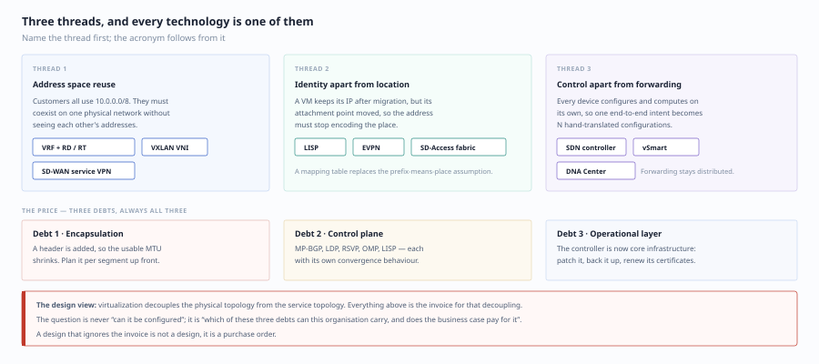
Many people memorize "network virtualization" as a string of acronyms (MPLS, VRF, VXLAN, SD-WAN) and end up more confused the more they study. In reality there are only three main threads, and every technology is a different implementation of those three:
很多人把"网络虚拟化"记成一串缩写（MPLS、VRF、VXLAN、SD-WAN），结果越背越乱。它其实只有三条主线，所有技术都是这三条主线的不同实现：
| Main thread | Problem it solves | Representative technologies |
|---|---|---|
| Address space reuse (isolation) | Different customers/businesses all use 10.0.0.0/8 — how can they coexist on one physical network |
VRF + RD/RT (MPLS L3VPN), VXLAN VNI, SD-WAN VPN |
| Separation of identity and location | A VM or container keeps its IP after migration, but its physical location changes | LISP, EVPN, SD-Access fabric |
| Separation of control and forwarding | Every device computes paths and is configured on its own, so policy cannot be delivered end to end | SDN controllers, SD-WAN vSmart, SD-Access DNA Center |
| 主线 | 要解决的问题 | 代表技术 |
|---|---|---|
| 地址空间复用（隔离） | 不同客户/业务用了同样的 10.0.0.0/8，如何在同一张物理网上共存 |
VRF + RD/RT（MPLS L3VPN）、VXLAN VNI、SD-WAN VPN |
| 标识与位置分离 | 虚拟机/容器迁移后 IP 不变，但物理位置变了 | LISP、EVPN、SD-Access fabric |
| 控制与转发分离 | 每台设备单独算路、单独配置，策略无法端到端下发 | SDN 控制器、SD-WAN vSmart、SD-Access DNA Center |
Remember this one sentence from a design perspective: virtualization decouples the physical topology from the service topology. The price is more encapsulation (MTU, overhead), more control plane (protocols, convergence), and more operational layers (controllers, orchestration). What CCDE tests is not "can you configure it" but "when you should not deploy it".
设计视角记住这一句：虚拟化把"物理拓扑"和"业务拓扑"解耦了。代价是多了封装（MTU、开销）、多了控制平面（协议、收敛）、多了运维层（控制器、编排）。CCDE 考的不是"会不会配"，而是"什么时候不该上"。
Foundation Topics · 基础内容
MPLS Overview · MPLS 概述
MPLS (Multiprotocol Label Switching) is becoming increasingly popular in large enterprises.
MPLS（多协议标签交换）在大型企业中越来越受欢迎。
MPLS design goals: - Support a large number of customer groups, each with many sites (scalability) - Provide value-added services that create new revenue streams (flexible and reliable) - Support every kind of service for enterprise customers on a unified infrastructure - Provide flexible service provisioning across many access media types
MPLS 设计目标： - 支持大量客户组和每组大量站点（可扩展） - 提供增值服务，创建新收入来源（灵活可靠） - 在统一基础设施上支持所有企业客户的各种服务 - 在各种介质接入方式上提供灵活的服务配置
For the enterprise side, the value of MPLS is not "label forwarding is faster than IP" (that claim stopped being true long ago), but rather:
对企业侧而言，MPLS 的价值不是"标签转发比 IP 快"（这个说法早就不成立），而是：
- The carrier manages the complexity of full-mesh connectivity for you (all you see is a VRF interface on the PE)
- Any-to-any site connectivity comes for free (the carrier core is a full-mesh P network, so you do not have to build tunnels yourself)
- A contractual SLA (latency, jitter, loss — traffic runs on a dedicated forwarding plane)
- 运营商帮你去管理全网连通的复杂度（你只看到 PE 上那个 VRF 接口）
- 天然的任意站点间连通（运营商核心是 full mesh 的 P 网，你不需要自己建隧道）
- 可承诺的 SLA（时延、抖动、丢包，走的是专用转发面）
MPLS Architecture Components · MPLS 架构组件
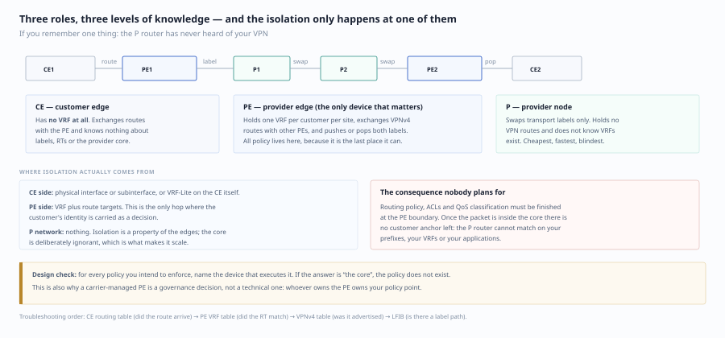
| Component | Definition | Function |
|---|---|---|
| CE (customer edge) | Customer-side device | Connects to the PE and exchanges routes |
| PE (provider edge) | Carrier-side edge device | Maintains VRFs, exchanges VPN routes, pushes and pops labels |
| P (provider node) | Core device | Switches labels, maintains no VPN routes |
| 组件 | 定义 | 功能 |
|---|---|---|
| CE (客户边缘) | 客户侧设备 | 连接到 PE，交换路由 |
| PE (提供商边缘) | 运营商侧边缘设备 | 维护 VRF，交换 VPN 路由，压入/弹出标签 |
| P (提供商节点) | 核心设备 | 标签交换，不维护 VPN 路由 |
Key insight: a P router never sees customer IP routes; it only swaps transport labels. That has an important design consequence — all of your routing policy, ACLs, and QoS classification must be completed at the PE boundary, because once traffic is inside the core there is nothing of yours to anchor on.
关键认知：P 路由器看不到客户的 IP 路由，它只交换传输标签。这带来一个设计上的重要后果 —— 你的路由策略、ACL、QoS 分类，全部要在 PE 边界做完，进去以后就没有你的锚点了。
MPLS Forwarding Plane · MPLS 转发平面
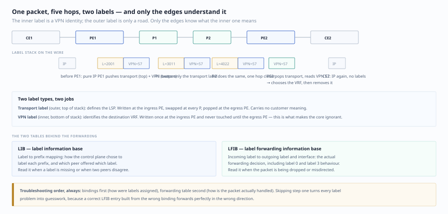
| Label type | Function | Where it is pushed |
|---|---|---|
| VPN label | Identifies the destination VRF (inner label, bottom of stack) | Ingress PE |
| Transport label | Label switched path (LSP) (outer label, top of stack) | Ingress PE and intermediate P routers |
| 标签类型 | 作用 | 压入位置 |
|---|---|---|
| VPN 标签 | 标识目标 VRF（内层，栈底） | 入口 PE |
| 传输标签 | 标签交换路径 (LSP)（外层，栈顶） | 入口 PE + 中间 P |
CE1 → PE1 [pushes VPN label + transport label] → P1 [swaps transport label] → P2 [swaps transport label] → PE2 [pops transport label, keeps VPN label] → CE2
CE1 → PE1 [压入 VPN 标签 + 传输标签] → P1 [交换传输标签] → P2 [交换传输标签] → PE2 [弹出传输标签, 保留 VPN 标签] → CE2
Bit-Level Structure of the Label Stack (Needed for Troubleshooting) · 标签栈的位级结构（排障时要用到）
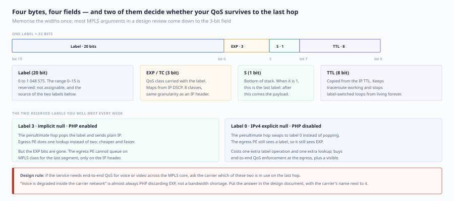
Every label is 4 bytes (32 bits):
每个标签占 4 字节（32 bit）：
| Field | Bits | Meaning |
|---|---|---|
| Label | 20 bit | Label value from 0 to 1048575, with 0–15 reserved |
| EXP | 3 bit | Originally for QoS; now called TC (traffic class) and used to map IP DSCP |
| S | 1 bit | Bottom of stack flag |
| TTL | 8 bit | Copied from the IP TTL, used for loop detection and traceroute |
| 字段 | 位数 | 含义 |
|---|---|---|
| Label | 20 bit | 0–1048575 的标签值，0–15 为保留值 |
| EXP | 3 bit | 早期用于 QoS，现统一称 TC（Traffic Class），映射 IP 的 DSCP |
| S | 1 bit | Bottom of Stack，栈底标志 |
| TTL | 8 bit | 复制自 IP TTL，用于环路检测与 traceroute |
The two reserved labels you will use most:
保留标签里最常用的两个：
- Label 0 (IPv4 Explicit NULL): the penultimate hop does not pop; it hands label 0 to the egress PE so that the egress PE can still read the EXP bits for QoS decisions
- Label 3 (Implicit NULL): the penultimate hop pops the label, so the egress PE receives a pure IP packet — this is PHP (penultimate hop popping)
- 标签 0（IPv4 Explicit NULL）：倒数第二跳不弹栈，把标签 0 交给出口 PE，让出口 PE 保留 EXP 位做 QoS 决策
- 标签 3（Implicit NULL）：倒数第二跳直接弹栈，出口 PE 收到的是纯 IP 包 —— 这就是 PHP（Penultimate Hop Popping）
The PHP Design Trade-off · PHP 的设计取舍
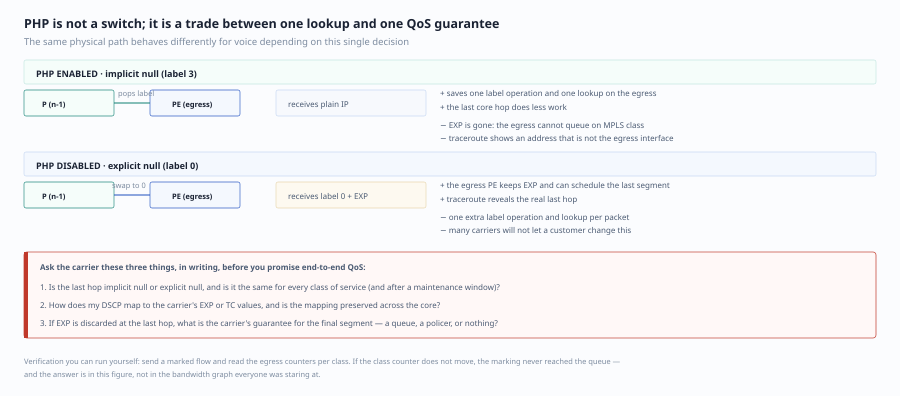
| Choice | Benefit | Cost |
|---|---|---|
| Enable PHP (implicit null) | The egress PE saves one label lookup; the last core hop saves one label operation | The egress PE cannot see the EXP bits, so it cannot use MPLS QoS for congestion management on the last segment |
Disable PHP (explicit null, mpls ip propagate-ttl/explicit-null) |
The egress PE can do EXP-based queue scheduling, and traceroute shows the real address of the last hop |
One extra label operation; some carriers do not allow customers to change it |
| 选择 | 好处 | 代价 |
|---|---|---|
| 启用 PHP（隐式空） | 出口 PE 少做一次标签查表，性能略好；核心最后一跳省一次标签操作 | 出口 PE 拿不到 EXP 位，无法用 MPLS QoS 做最后一段的拥塞管理 |
禁用 PHP（显式空，mpls ip propagate-ttl/explicit-null） |
出口 PE 能做基于 EXP 的队列调度；traceroute 能看到最后一跳的真实地址 |
多一次标签操作；部分运营商默认不允许客户改 |
💡 Design hint: if the whole VPN requires end-to-end QoS (especially voice or video across MPLS), you must confirm with the carrier whether the last hop preserves EXP. Many incidents where "voice is downgraded to best effort inside the carrier network" are rooted in PHP throwing away EXP.
💡 设计提示：如果整条 VPN 要端到端 QoS（尤其是语音/视频跨 MPLS），必须和运营商确认最后一跳是否保留 EXP。很多"语音在运营商侧被降级成 best effort"的故障，根因就是 PHP 把 EXP 丢了。
The Two Forwarding Tables · 转发用的两张表
- LIB (label information base): the label-to-prefix mapping, a control-plane product
- LFIB (label forwarding information base): incoming label → outgoing label plus outgoing interface, the actual forwarding basis
- LIB（Label Information Base）：标签 → 前缀的映射，控制平面产物
- LFIB（Label Forwarding Information Base）：入标签 → 出标签 + 出接口，真正的转发依据
Two-step troubleshooting: show mpls ldp bindings (the LIB — how labels were assigned) → show mpls forwarding-table (the LFIB — how packets are really forwarded).
排障两步走：show mpls ldp bindings（LIB，看标签怎么分的）→ show mpls forwarding-table（LFIB，看包实际怎么转）。
Label Distribution Protocols: Three Approaches · 标签分配协议：三种做法
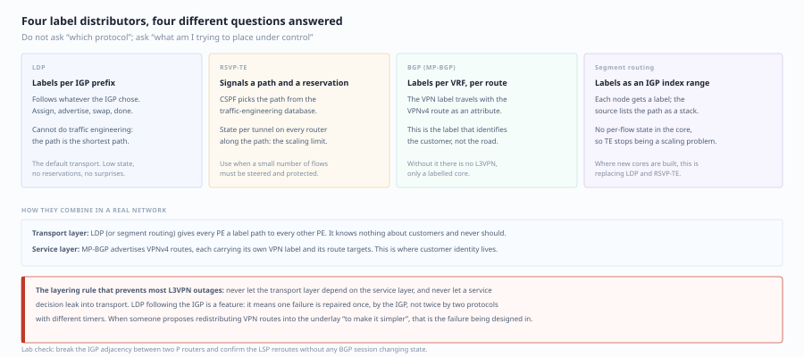
| Protocol | Who assigns labels | Characteristics | Where it fits |
|---|---|---|---|
| LDP | Follows the IGP and assigns a label to every IGP prefix | Simplest; solves "reachability" but not "constraints" | Carrier cores, basic L3VPN |
| RSVP-TE | Assigns labels for explicitly routed LSPs | Supports bandwidth reservation, affinity, and fast reroute | MPLS TE, where traffic engineering is required |
| BGP (VPNv4 carries its own label) | PEs assign labels for VPN routes | Naturally bound to VPN routes | The VPN label in L3VPN |
| Segment Routing (SR-MPLS) | IGP extensions (OSPF/IS-IS SIDs) | No LDP or RSVP needed; labels distributed by the IGP; source routing | Greenfield networks, large service providers |
| 协议 | 谁在发标签 | 特点 | 适用 |
|---|---|---|---|
| LDP | 跟随 IGP 为每个 IGP 前缀发标签 | 最简单，只解决"到达"不解决"约束" | 运营商核心、基础 L3VPN |
| RSVP-TE | 为显式路径的 LSP 发标签 | 支持带宽预留、亲和属性、快速重路由 | MPLS TE、需要流量工程 |
| BGP（VPNv4 自带标签） | PE 之间为 VPN 路由发标签 | 与 VPN 路由天然绑定 | L3VPN 的 VPN 标签 |
| Segment Routing（SR-MPLS） | IGP 扩展（OSPF/ISIS SID） | 无需 LDP/RSVP，标签由 IGP 分发，源路由 | 新建网、大型 SP |
A trend judgment (and one worth writing into the design document): the LDP + RSVP-TE dual stack is being replaced by SR-MPLS — because SR merges "label distribution" into the IGP, removing one independent control plane (LDP) and one independent signaling protocol (RSVP). If a customer is building a greenfield network and does not plan to change vendors within five years, SR gives lower long-term operational cost.
趋势判断（设计文档里应该写下的判断）：LDP + RSVP-TE 的双协议栈正在被 SR-MPLS 取代 —— 因为 SR 把"标签分配"和"IGP"合成一个协议，去掉了一个独立的控制平面（LDP）和一个独立的信令（RSVP）。如果客户是新建网络且 5 年内不考虑换厂商，SR 是更低的长期运维成本。
MPLS Control Plane Components · MPLS 控制平面组件
1. VRF (Virtual Routing and Forwarding) · VRF (虚拟路由转发)
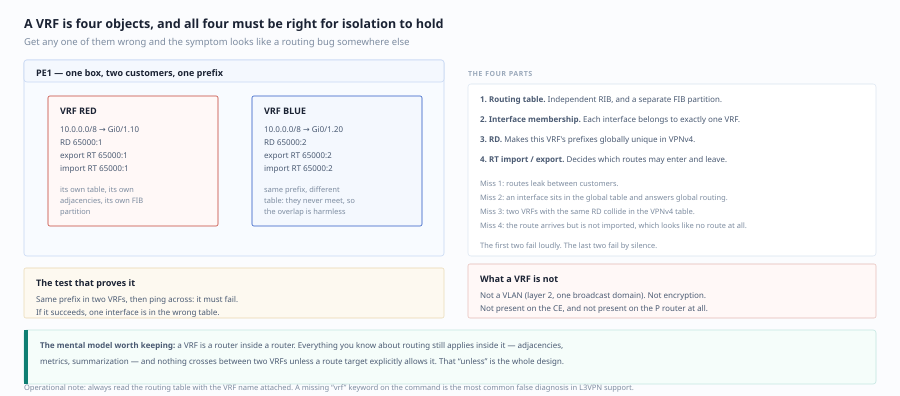
A VRF is the primary mechanism for maintaining routing isolation at Layer 3 device level. Each PE maintains a separate routing and forwarding instance for every VRF of every customer.
VRF 是在三层设备级别维护路由隔离的主要机制。每个 PE 为每个客户的每个 VRF 维护独立的路由和转发实例。
A VRF actually contains four things: its own routing table, its own forwarding table (CEF), its own set of interfaces, and its own routing protocol processes.
一个 VRF 里实际包含四样东西：独立的路由表、独立的转发表（CEF）、独立的接口集合、独立的路由协议进程。
The most easily overlooked design point: a VRF is a per-hop concept, not an end-to-end concept. VRFs exist only on PEs — a CE has no VRF at all (it only knows it is that device). Therefore:
设计上最容易忽视的一点：VRF 是"每跳"的概念，不是"端到端"的概念。VRF 只存在于 PE 上，CE 上根本没有 VRF（CE 只知道自己是那台设备）。所以：
- Isolation on the CE side relies on physical interfaces or subinterfaces (or VRF-Lite on the CE itself)
- Isolation on the PE side relies on VRF + RT
- Isolation in the middle P network relies on nothing (the P routers do not even know VRFs exist)
- CE 侧的隔离靠物理接口或子接口（或 CE 自己的 VRF-Lite）
- PE 侧的隔离靠 VRF + RT
- 中间 P 网侧什么都不靠（P 根本不知道有 VRF）
2. RD (Route Distinguisher) · RD (Route Distinguisher, 路由区分符)
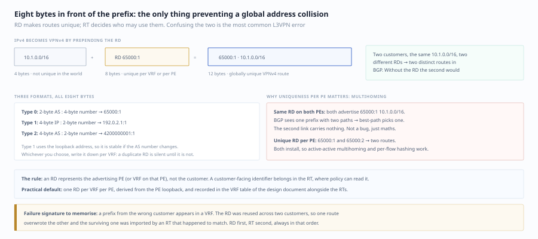
| Item | Content |
|---|---|
| Purpose | Converts IPv4 addresses into VPNv4 addresses so that overlapping address spaces are unique inside the MPLS core |
| Format | Type:Administrator:Assigned Number, 8 bytes |
| Types | Type 0 (2-byte AS : 4-byte number), Type 1 (4-byte IP : 2-byte number), Type 2 (4-byte AS : 2-byte number) |
| 项 | 内容 |
|---|---|
| 作用 | 将 IPv4 地址转换为 VPNv4 地址，使重叠地址空间在 MPLS 核心中唯一 |
| 格式 | Type:Administrator:Assigned Number，8 字节 |
| 类型 | Type 0 (2 字节 AS:4 字节 NN)、Type 1 (4 字节 IP:2 字节 NN)、Type 2 (4 字节 AS:2 字节 NN) |
One sentence to remember the division of labor between RD and RT: RD makes routes unique (solves "can they be stored"), RT distributes routes (solves "who gets them"). An RD is used only inside PEs and controls no policy at all; treating an RD as a policy tool is the most typical beginner's mistake.
一句话记住 RD 和 RT 的分工：RD 让路由唯一（解决"存得下"），RT 让路由分发（解决"发给谁"）。RD 只在 PE 内部使用，不控制任何策略；把 RD 当成策略工具是新手最典型的误解。
RD allocation models:
RD 分配模型：
| Model | Characteristics | Where it fits |
|---|---|---|
| One unique RD per VPN | Simple and easy to manage | No multihoming requirement |
| One unique RD per PE per VPN | Supports active/active multihoming | Multihomed remote sites |
| One unique RD per interface per VPN | Most flexible but most complex | Complex multihoming scenarios |
| 模型 | 特点 | 适用场景 |
|---|---|---|
| 每 VPN 唯一 RD | 简单、易管理 | 无多归属需求 |
| 每 PE 每 VPN 唯一 RD | 支持 Active/Active 多归属 | 多归属远程站点 |
| 每接口每 VPN 唯一 RD | 最灵活但最复杂 | 复杂多归属场景 |
Why does multihoming need a "unique RD per PE"? Because when the same site advertises the same prefix from two PEs, if both PEs use the same RD the resulting VPNv4 prefixes are identical, so BGP treats them as two copies of the same route and can select only one (and by default does not install two paths to the same neighbor). With different RDs, two distinct VPNv4 prefixes are generated and the PE can keep both paths in the VRF for ECMP or fast switching.
为什么多归属需要"每 PE 唯一 RD"？因为同一个站点从两个 PE 通告同一前缀时，如果两个 PE 用同一个 RD，生成的 VPNv4 前缀完全一样，BGP 会认为是同一条路由的两个副本，只能选一条（且默认不装两条到同一邻居）。用不同 RD 后生成两条不同的 VPNv4 前缀，PE 才能在 VRF 里保留两条路径做 ECMP 或快速切换。
3. RT (Route Target) · RT (Route Target, 路由目标)
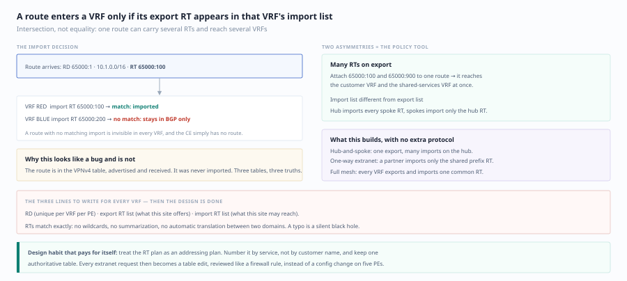
| Item | Content |
|---|---|
| Purpose | Controls which VRFs import/export VPN routes |
| Export RT | The RT attached when a PE exports a route into MP-BGP (an extended community, 8 bytes) |
| Import RT | When a PE receives a VPNv4 route, it places it in every VRF whose import RT matches |
| 项 | 内容 |
|---|---|
| 作用 | 控制 VPN 路由导入/导出哪些 VRF |
| Export RT | PE 将路由导出到 MP-BGP 时附加的 RT（扩展团体属性，8 字节） |
| Import RT | PE 收到 VPNv4 路由时，把路由放进所有 import RT 匹配的 VRF |
A single VRF can have multiple import RTs and multiple export RTs — this is the source of every topology trick: extranet, shared services, and hub-and-spoke.
一个 VRF 可以有多个 import RT、多个 export RT —— 这是 Extranet、共享服务、Hub-and-Spoke 全部拓扑技巧的来源。
💡 RD makes routes unique; RT controls route distribution. A VRF uses import RTs to decide which routes it accepts.
💡 RD 使路由唯一，RT 控制路由分发。VRF 使用 Import RT 决定接受哪些路由。
4. MP-BGP (Multiprotocol BGP) · MP-BGP (多协议 BGP)
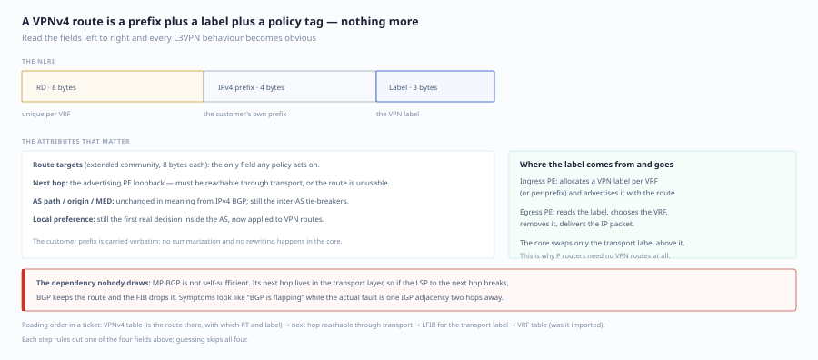
MP-BGP uses the VPNv4/VPNv6 address families to exchange VPN routes between PEs:
MP-BGP 使用 VPNv4/VPNv6 地址族在 PE 之间交换 VPN 路由：
- RD + IPv4 prefix = a VPNv4 prefix (8 + 4 = 12 bytes)
- Carries the VPN label (inside MP_REACH_NLRI)
- Carries RT extended communities
- 携带 RD + IPv4 前缀 = VPNv4 前缀（8 + 4 = 12 字节）
- 携带 VPN 标签（在 MP_REACH_NLRI 里）
- 携带 RT 扩展团体属性
The complete structure of a VPNv4 route:
VPNv4 路由的完整结构：
[RD 8B][IPv4 4B] + Label(3B, 20bit) + RT extended communities(8B each) + Next-Hop + MED/LP/AS_PATH...
[RD 8B][IPv4 4B] + Label(3B, 20bit) + RT 扩展团体(每个 8B) + Next-Hop + MED/LP/AS_PATH...
5. VPNv4 Route Reflection Design (Guaranteed in Real Projects) · VPNv4 的路由反射设计（真实项目必考）
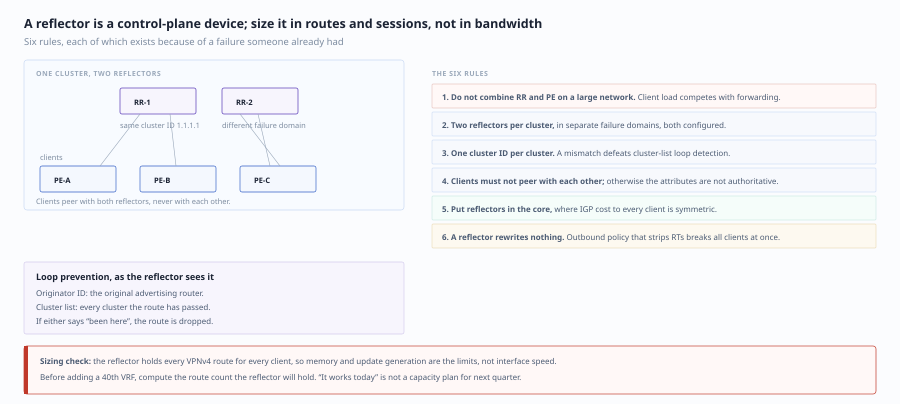
As the number of PEs grows, the number of full-mesh VPNv4 iBGP sessions grows as N(N−1)/2. Fifty PEs means 1,225 sessions — unacceptable. VPNv4 therefore requires RRs (route reflectors).
PE 数量一多，VPNv4 的 full mesh iBGP 会话数按 N(N-1)/2 增长。50 个 PE 就是 1225 条会话 —— 不可接受。所以 VPNv4 必须用 RR（Route Reflector）。
| Design point | Recommended practice | Reasoning |
|---|---|---|
| Number of RRs | Two per cluster, redundant | A single RR failure forces reconvergence of every VPN route |
| RR location | On the P side (carrier-managed) or customer-built | A carrier-managed RR saves operations, but you lose control over policy |
| Address family | Enable address-family vpnv4 separately |
Decouples from IPv4 unicast and makes hierarchical scaling easier |
| Next hop | RRs do not change NEXT_HOP by default | Keeps the PE's original next hop so traffic takes the optimal path (the RR is not in the data plane) |
| Cluster ID | Configure explicitly in multi-cluster designs | Defaults to the Router ID, which changes when hardware is replaced |
| Routing policy | Use RT or prefix filtering on the RR to reduce scale | Filtering on PEs creates black holes (PEs then disagree about what should exist) |
| 设计要点 | 建议做法 | 理由 |
|---|---|---|
| RR 数量 | 每集群 2 台，冗余 | 单 RR 故障会导致全部 VPN 路由重收敛 |
| RR 位置 | 放在 P 网侧（运营商提供）或客户自建 | 运营商托管 RR 省运维，但你对策略失去控制 |
| 地址族 | 单独启用 address-family vpnv4 |
与 IPv4 单播解耦，便于分级扩展 |
| 下一跳 | RR 默认不改变 NEXT_HOP | 保留 PE 的原始下一跳，让流量走最优路径（RR 不进数据面） |
| Cluster ID | 多集群设计时显式配置 | 默认用 Router ID，换设备会变 |
| 路由策略 | 在 RR 上用 RT 过滤/前缀过滤收敛规模 | PE 上过滤会造成路由黑洞（PE 之间期望值不一致） |
⚠️ Trap: putting an RR in the traffic path (that is, making the RR also a PE). Once the RR's CPU is saturated by reflection work, forwarding suffers too. An RR should be designed as a pure control-plane device.
⚠️ 陷阱：把 RR 放在流量路径上（即让 RR 同时是 PE），一旦 RR 的 CPU 被反射任务打满，会连带影响转发。RR 应设计为纯控制面设备。
The Three Inter-AS VPN Options · Inter-AS VPN 的三种选项
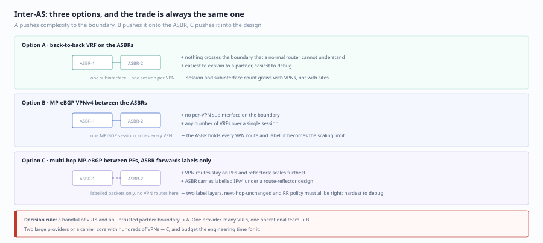
| Option | Approach | Advantages | Disadvantages |
|---|---|---|---|
| Option A | VRF-to-VRF back-to-back between ASBRs (one subinterface/VRF per VPN) | Simple; independent policy per AS | Poor scalability — the ASBR needs a VRF per VPN |
| Option B | MP-eBGP between ASBRs exchanging VPNv4 | No per-VPN VRF needed | The ASBR must hold every VPN route and needs next-hop-self plus a working LSP |
| Option C | Multi-hop MP-eBGP runs directly between RRs; ASBRs only forward | Best scalability; ASBRs hold no VPN routes | Requires label retention plus BGP LSP; hardest to configure and troubleshoot |
| 选项 | 做法 | 优点 | 缺点 |
|---|---|---|---|
| Option A | ASBR 之间用 VRF-to-VRF 背靠背（每 VPN 一个子接口/VRF） | 简单、每 AS 独立策略 | 扩展性差，ASBR 要为每个 VPN 建 VRF |
| Option B | ASBR 之间跑 MP-eBGP 交换 VPNv4 | 不需要每 VPN 一个 VRF | ASBR 要保存全部 VPN 路由，需要 next-hop-self + LSP 打通 |
| Option C | 多跳 MP-eBGP 在 RR 之间直接跑，ASBR 只转发 | 扩展性最好，ASBR 不存 VPN 路由 | 需要 label retention + BGP LSP，配置与排障最复杂 |
PE-CE Routing Protocol Design · PE-CE 路由协议设计
| Protocol | Characteristics | Special considerations |
|---|---|---|
| BGP | Most common, native support | AS override, allowas-in, SoO |
| OSPF | Good fit for enterprises | DN bit, Domain ID, sham link |
| EIGRP | Cisco environments | SoO (site of origin), cost community |
| Static | Simplest | No dynamic learning, no bidirectional verification |
| 协议 | 特点 | 特殊考量 |
|---|---|---|
| BGP | 最常用，原生支持 | AS 覆盖、allowas-in、SoO |
| OSPF | 适合企业 | DN 位、Domain ID、Sham Link |
| EIGRP | Cisco 环境 | SoO (Site of Origin)、cost community |
| 静态 | 最简单 | 无动态学习、无双向验证 |
Selection logic: if the CE is customer-managed → use the protocol the customer already runs (usually OSPF/EIGRP/BGP); if the customer does not want to expose internal routes → use static routes plus a default route; if there are many sites and fine-grained policy is required → use BGP.
选择逻辑：CE 是客户自己管的设备 → 用客户已有的协议（通常是 OSPF/EIGRP/BGP）；客户不想暴露内部路由 → 用静态 + 默认路由；站点数很多且需要精细策略 → 用 BGP。
Special Handling of OSPF as PE-CE · OSPF 作为 PE-CE 的特殊处理
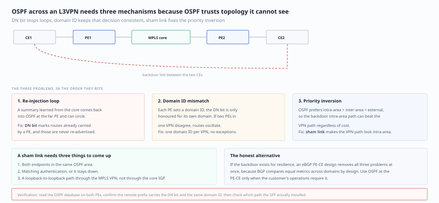
| Mechanism | Function |
|---|---|
| DN bit (down bit) | Prevents routes learned from MPLS from being redistributed back into MPLS (loop prevention) |
| Domain ID | Identifies the OSPF domain; the LSA type across MPLS depends on whether both sides are in the same domain |
| Sham link | Creates a logical link between PEs so that OSPF prefers the MPLS path over a backdoor link |
| 机制 | 作用 |
|---|---|
| DN 位 (Down Bit) | 防止从 MPLS 学到的路由被重分发回 MPLS（环路防止） |
| Domain ID | 识别 OSPF 域，跨 MPLS 的路由类型取决于是否在同一域 |
| Sham Link | 在 PE 之间创建逻辑链路，使 OSPF 优选 MPLS 路径而非后门链路 |
How the DN Bit Works (You Must Understand It at This Level) · DN 位的工作机制（必须理解到这一层）
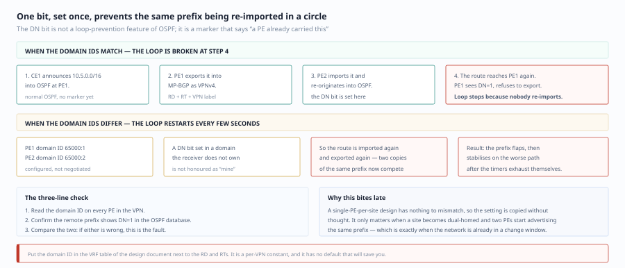
- When a PE redistributes a VPN route learned from BGP into OSPF (as a Type 3 summary or a Type 5 external LSA), it sets the DN bit in the LSA's Options field
- When another PE receives an LSA with the DN bit set on a VRF interface, it refuses to install it in the OSPF database and does not redistribute it back into BGP
- The result: routes do not oscillate back and forth between "BGP → OSPF → BGP"
- PE 把 BGP 学到的 VPN 路由重分发进 OSPF（变成 Type 3 汇总或 Type 5 外部 LSA）时，在 LSA 的 Options 字段置 DN 位
- 另一个 PE 从 VRF 接口收到带 DN 位的 LSA 时，拒绝把它装进 OSPF 数据库/不再重分发回 BGP
- 结果：路由不会在"BGP → OSPF → BGP"之间来回震荡
⚠️ A typical failure: two sites in the same OSPF domain are connected by both an MPLS link and a backdoor link. If the Domain IDs configured on the PEs do not match, a PE treats the Type 3 LSAs received from the other side as routes from "a different OSPF domain" and regenerates them; the DN bit check then fails, the backdoor link and the MPLS path overwrite each other, and you get route flapping plus a TTL-expiring loop.
⚠️ 典型故障：同一 OSPF 域的两个站点之间既有 MPLS 链路又有后门链路。如果 PE 配置的 Domain ID 不一致，PE 会把对方发来的 Type 3 LSA 当作"不同 OSPF 域"的路由重新生成，DN 位判断失效，于是后门链路和 MPLS 路径互相覆盖，出现路由翻转 + TTL 逐渐耗尽的环路。
The Design Significance of the Sham Link · Sham Link 的设计意义
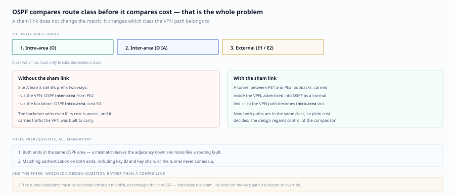
By default, routes learned through MPLS look like inter-area (Type 3) or external (Type 5) to the CE, while routes learned over a backdoor link are intra-area (Type 1/2). OSPF's preference order is intra > inter > external, so the backdoor link always wins — even if it is a 10M microwave link while MPLS is a 1G fiber.
默认情况下，MPLS 学到的路由在 CE 看来是 Inter-Area（Type 3）或 External（Type 5），而通过后门链路学到的是 Intra-Area（Type 1/2）。OSPF 的优先级是 Intra > Inter > External，所以后门链路永远赢 —— 哪怕它是一条 10M 的微波链路，而 MPLS 是 1G 光纤。
A sham link disguises the MPLS path as an intra-area link:
Sham Link 就是把 MPLS 路径伪装成一条 Intra-Area 的链路：
! On both PEs, in the same VRF and the same area
interface Loopback 100
ip address 10.255.0.1 255.255.255.255 ! both ends must be /32 and mutually reachable through BGP
router ospf 1 vrf CUSTOMER
area 0 sham-link 10.255.0.1 10.255.0.2 cost 10
! 两端 PE 上，同一 VRF 内、同一 area
interface Loopback 100
ip address 10.255.0.1 255.255.255.255 ! 两端必须是 /32，且通过 BGP 互可达
router ospf 1 vrf CUSTOMER
area 0 sham-link 10.255.0.1 10.255.0.2 cost 10
Preconditions (all three are mandatory): the two sham-link endpoints (/32) are mutually reachable through MP-BGP, they sit in the same OSPF area, and both sides use the same Domain ID.
前置条件（三条缺一不可）：两个 sham-link 端点 /32 通过 MP-BGP 互相可达、位于同一 OSPF area、两端 Domain ID 一致。
EIGRP SoO (Site of Origin)
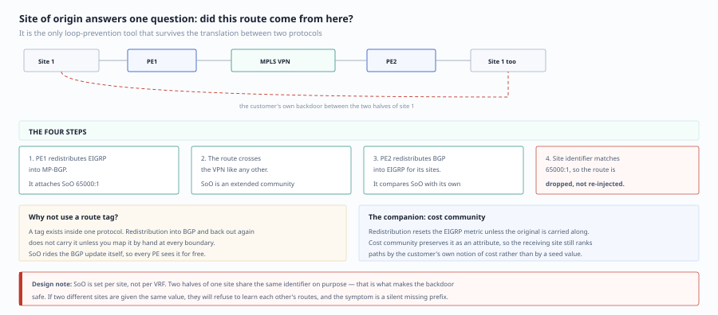
⚠️ When a site has both an MPLS VPN link and a backdoor link, EIGRP SoO prevents routing loops and route racing.
⚠️ 当站点同时有 MPLS VPN 链路和后门链路时，EIGRP SoO 防止路由环路和路由竞速问题。
Mechanism: when a PE redistributes an EIGRP route into BGP it attaches a SoO extended community (AS:nn or IP:nn, usually the site identifier); when the PE on the other side redistributes the BGP route back into EIGRP, if it finds that the SoO equals the SoO configured for this site, it rejects the route — because "this route originally came from me".
机制：PE 把 EIGRP 路由重分发进 BGP 时，附加 SoO 扩展团体（AS:nn 或 IP:nn，通常用站点标识）；另一侧 PE 把 BGP 路由重分发回 EIGRP 时，如果发现 SoO 等于本站点配置的 SoO，就拒绝 —— 因为"这条路由本来就是我发出去的"。
Going a step further, EIGRP also has a cost community mechanism, used to force preference for the MPLS path when "the backdoor link is closer but worse" (same goal as the OSPF sham link, different means).
再进一步，EIGRP 还有一个 cost community 机制，用于在"后门链路更近但更差"的场景下强制优选 MPLS 路径（与 OSPF 的 sham-link 目的相同，手段不同）。
The Three Keys for BGP as PE-CE · BGP 作为 PE-CE 的三把钥匙
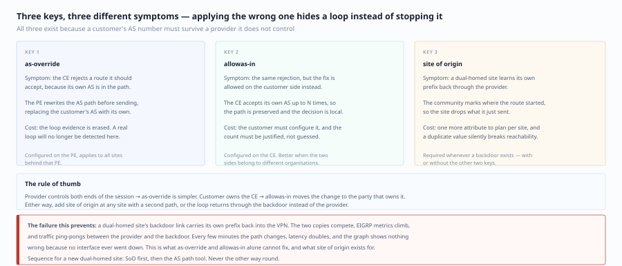
| Scenario | Problem | Solution |
|---|---|---|
| A customer site is dual-homed to two PEs of the same carrier and the customer AS is the same | When a PE advertises the route it puts the customer AS into AS_PATH; when the other PE advertises it back the customer sees its own AS in the path → discards | neighbor x.x.x.x as-override (the PE replaces the customer AS with its own) or allowas-in on the customer side |
| The customer and the carrier have conflicting AS numbers | Same as above | Same as above |
| A site has a backdoor link and both ends run BGP | Route feedback and suboptimal paths | SoO (bgp dmzlink-bw can add bandwidth awareness) |
| 场景 | 问题 | 解决 |
|---|---|---|
| 客户站点双归到同一运营商的 PE，客户 AS 相同 | PE 发出路由时把客户 AS 加进 AS_PATH，另一个 PE 再发给客户时，客户看到自己的 AS 在路径里 → 丢弃 | neighbor x.x.x.x as-override（PE 侧把客户 AS 替换成自己的 AS）或客户侧 allowas-in |
| 客户与运营商 AS 号冲突 | 同上 | 同上 |
| 站点有后门链路且两端都是 BGP | 路由回流、次优路径 | SoO（bgp dmzlink-bw 可额外做带宽感知） |
Design trade-off: as-override is configured on the PE, invisible to the customer, and has the lowest operational cost, but it breaks the loop-prevention semantics of AS_PATH (the customer-side AS_PATH length is no longer trustworthy). allowas-in is configured on the CE, controlled by the customer, but requires the customer to change configuration. In cross-carrier scenarios the only option is usually allowas-in.
设计取舍：as-override 在 PE 侧配，客户无感，运维成本最低，但破坏了 AS_PATH 的防环语义（客户侧的 AS_PATH 长度不再可信）。allowas-in 在 CE 侧配，客户可控，但要求客户改配置。跨运营商场景通常只能选 allowas-in。
MPLS L3VPN Topology Models · MPLS L3VPN 拓扑模型
| Topology | Characteristics | Where it fits |
|---|---|---|
| Full mesh | All sites connect directly to each other | Sites must communicate directly |
| Hub-and-spoke | All traffic passes through the hub | Central inspection is required (e.g. a firewall) |
| Multi-level hub-and-spoke | Hierarchical hubs | Large hierarchical networks |
| Extranet/shared services | Routes shared between VPNs | Shared Internet access, shared data center services |
| 拓扑 | 特点 | 适用场景 |
|---|---|---|
| 全互连 (Full Mesh) | 所有站点直接互连 | 站点间需要直接通信 |
| Hub-and-Spoke | 所有流量经过 Hub | 需要中心检查（如防火墙） |
| 多级 Hub-and-Spoke | 分层 Hub | 大型分层网络 |
| Extranet/共享服务 | VPN 间共享路由 | 共享互联网、共享数据中心服务 |
How to Design RTs Without Going Wrong (the Core Methodology) · RT 怎么设计才不出错（核心方法论）
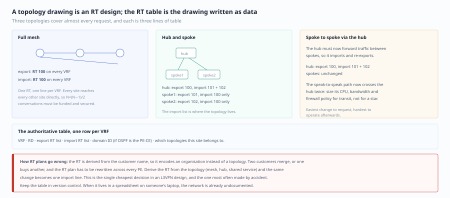
Remember one rule: whether a route gets through depends only on "whether the receiver's import RT includes the export RT attached by the sender". It has nothing to do with the RD, with which PE, or with the topology.
记住一条规则：路由能不能过去，只取决于"接收方的 import RT 是否包含发送方附加的 export RT"。 与 RD、与 PE、与拓扑完全无关。
The following real, working designs demonstrate the three topologies.
下面用一组真实可用的设计来演示三种拓扑。
Scenario 1: Full Mesh (All Sites Reach Each Other) · 场景一：Full Mesh（所有站点互通）
! One RT shared by the whole network
vrf definition CORP
rd 65000:1
route-target export 65000:100
route-target import 65000:100
! 全网统一一个 RT
vrf definition CORP
rd 65000:1
route-target export 65000:100
route-target import 65000:100
Every site imports and exports the same RT → any two sites can reach each other. Simple, but once the number of sites exceeds 20–30, both the routing table and the failure domain become too large.
所有站点互相 import/export 同一个 RT → 任意两站点互通。简单，但站点数超过 20~30 后路由与故障域都过大。
Scenario 2: Hub-and-Spoke (Traffic Only Goes Through the Hub by Default) · 场景二：Hub-and-Spoke（默认只走 Hub）
! Hub site
vrf definition CORP
route-target export 65000:100 ! global RT: everyone must be able to reach the hub
route-target import 65000:200 ! collect the RTs of all spokes
route-target import 65000:100 ! the hub must also receive other hubs/shared services
! Spoke site
vrf definition CORP
route-target export 65000:200 ! the spoke RT, received only by the hub
route-target import 65000:100 ! receive only hub routes, not the routes of other spokes
! Hub 站点
vrf definition CORP
route-target export 65000:100 ! 全局 RT：谁都要能到 Hub
route-target import 65000:200 ! 收所有 Spoke 的 RT
route-target import 65000:100 ! 自己要能收到别的 Hub/共享服务
! Spoke 站点
vrf definition CORP
route-target export 65000:200 ! Spoke 的 RT，只有 Hub 收
route-target import 65000:100 ! 只收 Hub 的路由，收不到别的 Spoke
Effect: a spoke knows only the hub (usually a default route or a summary pointing at the hub), and spoke-to-spoke traffic must transit the hub.
效果：Spoke 只知道 Hub（通常是一条指向 Hub 的默认路由或汇总），Spoke 之间的流量必须经过 Hub。
Scenario 3: Spokes Also Need to Reach Each Other (the Easiest One to Misconfigure) · 场景三：Spoke 之间也要互通（最容易配错的一条）
Two options, each with a cost:
两个方案，各有代价：
| Option | Approach | Cost |
|---|---|---|
| Change the RTs (spokes import each other) | Spokes add route-target import 65000:200 |
A direct spoke-to-spoke path is built, bypassing the hub's firewall/IPS — the security policy stops working |
| Hub relay (recommended) | The hub's VRF re-exports the spoke routes (RT rewrite, or multiple VRFs chained on the hub) | Traffic detours through the hub, so latency doubles and hub bandwidth becomes the bottleneck |
| 方案 | 做法 | 代价 |
|---|---|---|
| 改 RT（Spoke 互收） | Spoke 增加 route-target import 65000:200 |
Spoke 之间建起直连路径，绕过 Hub 的防火墙/IPS —— 安全策略失效 |
| Hub 中转（推荐） | Hub 的 VRF 把 Spoke 路由再导出（RT 重写或 Hub 上多 VRF 串联） | 流量绕行 Hub，时延翻倍、Hub 带宽成瓶颈 |
⚠️ The most common production incident: to make "branches reach each other", operations added a global import RT to every spoke. Testing at the time showed everything worked. Months later a security audit discovered that branch-to-branch traffic never passed through the headquarters firewall — an RT is a hidden policy that "once configured, nobody ever remembers".
⚠️ 最常见的生产事故：为了让"分部之间能互访"，运维直接给所有 Spoke 加了全局 import RT。当时测试是全通的，几个月后安全审计发现分部之间的流量完全没经过总部的防火墙 —— RT 是一个"配置上去就再也想不起来"的隐性策略。
Extranet and Shared Services · Extranet 与共享服务
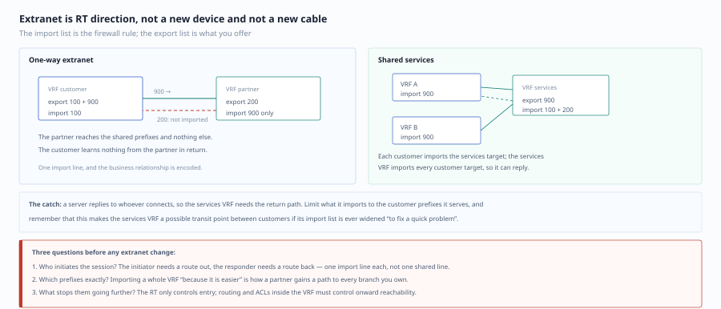
| Model | RT design | Typical use |
|---|---|---|
| Shared services VRF | The service VRF exports 65000:999; every business VRF imports 65000:999; the service VRF imports each business's RT (one-way or two-way) |
Shared DNS/DHCP/NTP, shared data center servers |
| One-way extranet (a supplier accesses my inventory system) | Only the supplier VRF imports the RT of the VRF holding the inventory servers; no reverse import | The partner can reach only specific servers and cannot move laterally |
| Hub as the shared-services relay | The hub VRF imports all RTs and rewrites them with route-target export |
Centralized security scrubbing |
| 模型 | RT 设计 | 典型用途 |
|---|---|---|
| 共享服务 VRF | 服务 VRF export 65000:999；所有业务 VRF 都 import 65000:999；服务 VRF import 各业务的 RT（单向或双向） |
共享 DNS/DHCP/NTP、共享数据中心服务器 |
| 单向 Extranet（供应商访问我的库存系统） | 只让供应商 VRF import 库存服务器所在 VRF 的 RT，反向不 import | 合作方只能访问特定服务器，不能横向移动 |
| Hub 作为中转的共享服务 | Hub VRF 同时 import 所有 RT，用 route-target export 重写 |
集中式安全清洗 |
💡 Design principle: extranets must always be one-way. Two-way import merges two organizations' routing domains and multiplies the risk of routing loops and policy leakage.
💡 设计原则：Extranet 一律单向。双向 import 等于把两个组织的路由域合并，路由环路和策略泄露风险成倍增加。
Route Summarization Is the Key to L3VPN Scalability · 路由汇总是 L3VPN 可扩展性的关键
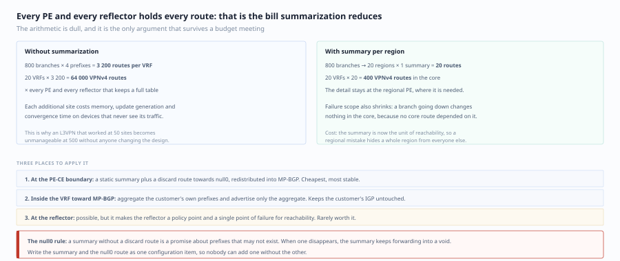
Every VRF on a PE must hold a complete routing table. Number of sites × routes per site = FIB pressure on the PE.
PE 上每个 VRF 都要保存一份完整路由表。站点数 × 每站点路由数 = PE 的 FIB 压力。
| Approach | Effect | Cautions |
|---|---|---|
| Summarize on the hub and then advertise | The PE routing table shrinks dramatically | Spokes lose detailed reachability, which makes fault localization harder |
| Summarize on the CE (do the summary on the CE) | Optimal; invisible to the carrier | Requires customer cooperation and contiguous addressing |
| Per-VRF summarization on the PE | A compromise | Summary black holes: when the details disappear there is no fallback, so null0 is mandatory |
| 做法 | 效果 | 注意 |
|---|---|---|
| Hub 侧汇总后再通告 | PE 路由表大幅缩小 | Spoke 之间失去明细可达性，故障定位变难 |
| CE 侧汇总（在 CE 上做 summary） | 最优，运营商无感 | 需要客户配合，且要求地址规划连续 |
| PE 上 per-VRF 汇总 | 折中 | 汇总黑洞：明细消失时无兜底，必须配 null0 |
MPLS L2VPN
| Technology | Characteristics |
|---|---|
| VPWS | Point-to-point Layer 2 pseudowire (E-Line), equivalent to one "virtual cable" |
| VPLS | Multipoint-to-multipoint Layer 2 service (E-LAN), equivalent to one virtual switch |
| EVPN | The next-generation BGP-based L2VPN, with MAC learning in the control plane |
| 技术 | 特点 |
|---|---|
| VPWS | 点对点二层伪线（E-Line），等同于一根"虚拟网线" |
| VPLS | 多点到多点二层服务（E-LAN），等价于一台虚拟交换机 |
| EVPN | 基于 BGP 的下一代 L2VPN，控制平面学习 MAC |
The Three Structural Flaws of VPLS (Why It Is Not Recommended for New Builds) · VPLS 的三个结构性缺陷（为什么不推荐新建）
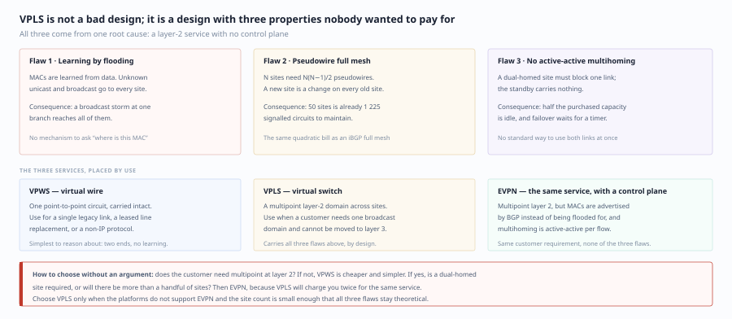
- MAC learning relies on data-plane flooding: unknown unicast, broadcast, and multicast (BUM) are all flooded, so at scale the core bandwidth is eaten by flooding
- Full-mesh pseudowires: N sites require N(N−1)/2 PWs, so the number of PWs on a PE grows with the square of the site count
- Multihoming is difficult: when a site is dual-homed to two PEs, one link must be blocked (loop prevention), so active/active is impossible and convergence depends on STP timers
- MAC 学习靠数据面泛洪：未知单播、广播、组播（BUM）全部泛洪，规模一大，核心带宽被泛洪吃掉
- 全连接伪线：N 个站点需要 N(N-1)/2 条 PW，PE 的 PW 数量随站点数平方增长
- 多归属困难：一个站点双归到两个 PE 时，必须阻塞一条链路（防环），无法做 Active/Active，收敛靠 STP 计时器
Why EVPN Replaces VPLS · EVPN 为什么取代 VPLS
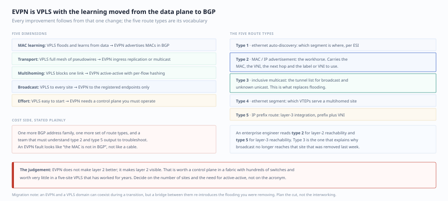
| Dimension | VPLS | EVPN |
|---|---|---|
| MAC learning | Data-plane flooding and learning | BGP control-plane advertisement (RT-2), no flooding |
| BUM traffic | Flooded to all sites | On demand (RT-3 IMET builds the multicast tree plus preferred forwarding) |
| Multihoming | One link must be blocked | ESI all-active, with DF election deciding the BUM forwarder |
| ARP/ND | Flooded across the whole network | ARP suppression (answered directly when the MAC/IP is already known in the control plane) |
| Scalability | Pseudowires grow with the square of the site count | Each PE has sessions only with the RRs |
| 维度 | VPLS | EVPN |
|---|---|---|
| MAC 学习 | 数据面泛洪学习 | BGP 控制面通告（RT-2），不泛洪 |
| BUM 流量 | 全站点泛洪 | 按需（RT-3 IMET 建立组播树 + 优选转发） |
| 多归属 | 必须阻塞一条 | ESI 多活（All-Active），DF 选举决定 BUM 转发者 |
| ARP/ND | 全网泛洪 | ARP 抑制（控制面已知 MAC/IP 时直接代答） |
| 扩展性 | 站点数平方级 PW | 每 PE 只与 RR 建会话 |
EVPN route types (remembering 2, 3, and 5 is enough for daily work):
EVPN 的路由类型（记住 2、3、5 就够日常用）：
| Type | Name | Function |
|---|---|---|
| 1 | Ethernet A-D | Advertises reachability per ESI, used for fast multihoming convergence and aliasing |
| 2 | MAC/IP advertisement | Advertises MAC (optionally with IP), enabling control-plane learning and ARP suppression |
| 3 | Inclusive multicast Ethernet tag | Advertises the replication list for BUM traffic |
| 4 | Ethernet segment | DF election for multihoming |
| 5 | IP prefix | Advertises IP prefix routes, used in L3 scenarios (symmetric IRB) |
| 类型 | 名称 | 作用 |
|---|---|---|
| 1 | Ethernet A-D | 按 ESI 通告可达性，用于多归属快速收敛与别名（Aliasing） |
| 2 | MAC/IP Advertisement | 通告 MAC（可选带 IP），控制面学习 + ARP 抑制 |
| 3 | Inclusive Multicast Ethernet Tag | 通告 BUM 流量的复制列表 |
| 4 | Ethernet Segment | 多归属的 DF 选举 |
| 5 | IP Prefix | 通告 IP 前缀路由，用于 L3 场景（对称 IRB） |
💡 Design choice: inside a data center (leaf-spine) it is almost always EVPN + VXLAN; for enterprise WAN Layer 2 interconnect requirements (cross-site vMotion, cross-site cluster heartbeats) use EVPN + MPLS or EVPN over SR. Pure VPLS should only appear in existing brownfield networks.
💡 设计选择：数据中心内部（leaf-spine）几乎一律用 EVPN + VXLAN；企业 WAN 二层互联需求（如跨站点 vMotion、跨站点集群心跳）用 EVPN + MPLS 或 EVPN over SR。纯 VPLS 只应出现在存量网络里。
MPLS Traffic Engineering (MPLS TE) and Alternatives · MPLS 流量工程 (MPLS TE) 与替代路线
Why TE Is Needed · 为什么需要 TE
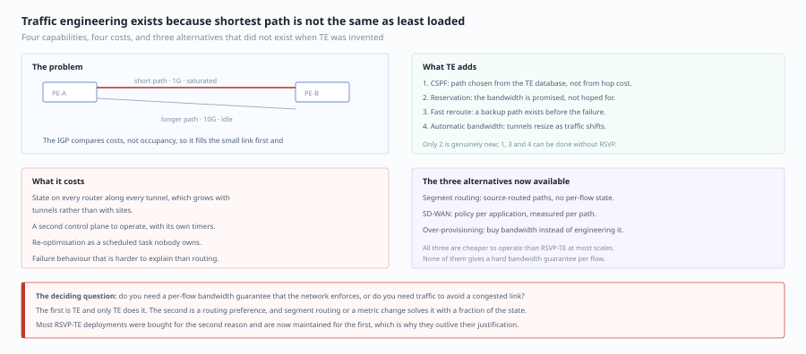
The IGP's shortest path algorithm (SPF) looks only at topology, never at bandwidth. The classic 10:1 bandwidth mismatch: a 1G link and a 10G link are equal (same cost), so SPF splits traffic 50/50 — the 1G link is instantly congested while the 10G link sits empty.
IGP 的最短路径算法（SPF）只看拓扑，不看带宽。经典的 10:1 带宽不匹配：一条 1G 链路和一条 10G 链路等价（cost 相同），SPF 把流量对半分 —— 1G 那条瞬间拥塞，10G 那条空着。
The MPLS TE approach: use RSVP-TE to specify the path explicitly and reserve bandwidth along it.
MPLS TE 的解决思路：用 RSVP-TE 显式指定路径，并在沿途预留带宽。
| Capability | Mechanism | Value |
|---|---|---|
| Constraint-based routing | CSPF: prune the IGP topology by bandwidth/affinity (admin group) and then compute the shortest path | Moves traffic off congested links |
| Bandwidth reservation | RSVP PATH/RESV reserves along the path | Deterministic bandwidth for voice/video |
| Fast reroute | FRR (link/node protection) with a pre-built backup LSP | Convergence < 50 ms, better than IGP's seconds |
| Auto-bandwidth | Auto-bandwidth periodically adjusts LSP bandwidth according to measured traffic | No manual tuning |
| 能力 | 机制 | 价值 |
|---|---|---|
| 约束路由 | CSPF：在 IGP 拓扑上按带宽/亲和属性（admin group）剪枝后再算最短路 | 把流量从拥塞链路挪开 |
| 带宽预留 | RSVP PATH/RESV 沿路径预留 | 语音/视频有确定性带宽 |
| 快速重路由 | FRR（链路/节点保护），预先建好备份 LSP | 收敛 < 50ms，优于 IGP 的秒级 |
| 自动带宽 | Auto-Bandwidth 定期按实测流量调整 LSP 带宽 | 免人工调参 |
The Cost of TE (Why Many Enterprises Skip It) · TE 的代价（为什么很多企业不上）
| Cost | How it shows up |
|---|---|
| Complexity | RSVP is yet another independent signaling protocol; paths, affinity, and tunnel policy all need maintenance |
| State volume | Every LSP has state on every device along the path, so P routers hold a large amount of soft state |
| Larger failure domain | If the RSVP-IGP interaction is designed badly you get "the tunnel is up but traffic does not use it" |
| Vendor differences | Affinity, bandwidth units, and FRR modes differ between vendors |
| 代价 | 具体表现 |
|---|---|
| 复杂度 | RSVP 是又一个独立信令协议，路径、亲和属性、隧道策略都要维护 |
| 状态量 | 每个 LSP 在每台沿途设备上都有状态，P 设备要保存大量软状态 |
| 故障域扩大 | RSVP 与 IGP 的联动一旦设计不当，会出现"隧道起来了但流量不走" |
| 厂商差异 | 亲和属性、带宽单位、FRR 模式各家不一致 |
The Three Current Alternatives · 现在的三种替代路线
| Route | Mechanism | Where it fits |
|---|---|---|
| SR-MPLS + SR-TE | Source routing using IGP-distributed SIDs, with a controller computing explicit paths | Greenfield service provider or large enterprise cores |
| SD-WAN application-aware routing | Multiple links plus per-application SLA path selection, with policy pushed by a controller | Enterprise WAN (replaces most of the MPLS TE use cases) |
| Scale out and tune IGP metrics | auto-cost reference-bandwidth plus multipath |
Small and medium networks; lowest cost |
| 路线 | 机制 | 适用 |
|---|---|---|
| SR-MPLS + SR-TE | 用 IGP 分发的 SID 做源路由，控制器算显式路径 | 新建 SP/大型企业核心 |
| SD-WAN 应用感知路由 | 多链路 + 逐应用 SLA 选路，由控制器下发策略 | 企业 WAN（替代 MPLS TE 的大部分诉求） |
| 靠扩容与 IGP 度量调整 | auto-cost reference-bandwidth + 多路径 |
中小型网络，成本最低 |
⚠️ A decision reminder: if the customer's real requirement is "critical applications must not be affected by link degradation", then SD-WAN's multiple links + BFD + application awareness is more direct and cheaper than MPLS TE. MPLS TE's strength is "bandwidth optimization inside a single carrier core"; it cannot solve business continuity requirements.
⚠️ 决策提醒：如果客户的真实需求是"重要应用不能受链路劣化影响"，那 SD-WAN 的多链路 + BFD + 应用感知比 MPLS TE 更直接、更便宜。MPLS TE 的强项是"在单一运营商核心内做带宽优化"，业务连续性诉求它解决不了。
Encapsulation Overhead and MTU: The First Hurdle in Virtualization Design · 封装开销与 MTU：虚拟化设计的第一道坎
Every virtualization technology adds encapsulation headers. If the MTU is not planned for at design time, you will inevitably hit the bizarre failure after go-live of "ping works, web pages load, but large file transfers fail and SSH hangs" — because PMTUD depends on ICMP, and ICMP is permanently blocked by ACLs in production networks.
所有虚拟化技术都会加封包头。 设计时如果不预留 MTU，上线后必然出现"能 ping 通、能打开网页、但传大文件失败/SSH 卡死"的诡异故障 —— 因为 PMTUD 依赖 ICMP，而 ICMP 在生产网里常年被 ACL 拦掉。
Extra Overhead of Common Encapsulations · 常见封装的额外开销
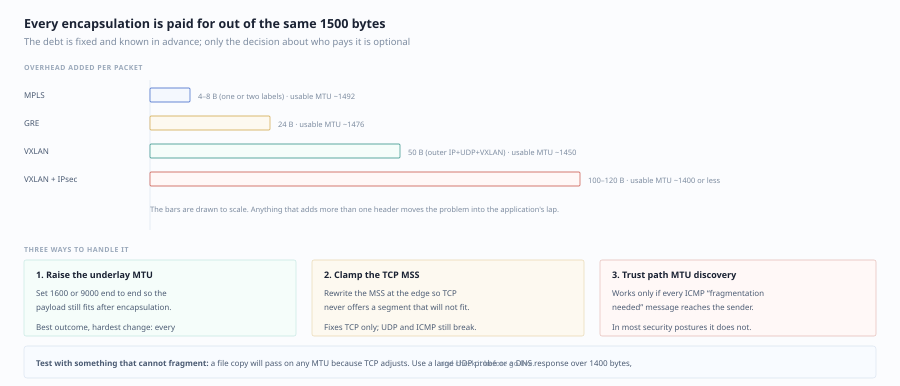
| Encapsulation | Extra overhead (bytes) | Notes |
|---|---|---|
| MPLS, 2 labels | 8 | 4B per label; 3 labels = 12B |
| GRE | 24 | 4B GRE header + 20B outer IP |
| IPsec transport mode (ESP/AH) | ~30–60 | Depends on the algorithm and IV length |
| IPsec tunnel mode | ~50–73 | Outer IP + ESP + IV + padding |
| VXLAN | 50 | 14B inner Ethernet + 8B VXLAN + 8B UDP + 20B outer IP |
| VXLAN + IPsec (tunnel mode) | ~100–120 | A common SD-WAN combination |
| DMVPN (mGRE + IPsec) | ~70–90 | Depends on the encryption algorithm |
| 封装 | 额外开销（字节） | 备注 |
|---|---|---|
| MPLS 2 层标签 | 8 | 每标签 4B；3 层标签 = 12B |
| GRE | 24 | 4B GRE 头 + 20B 外层 IP |
| IPsec 传输模式（ESP/AH） | ~30–60 | 取决于算法与 IV 长度 |
| IPsec 隧道模式 | ~50–73 | 外层 IP + ESP + IV + padding |
| VXLAN | 50 | 14B 内层以太 + 8B VXLAN + 8B UDP + 20B 外层 IP |
| VXLAN + IPsec（隧道模式） | ~100–120 | SD-WAN 常见组合 |
| DMVPN（mGRE + IPsec） | ~70–90 | 视加密算法 |
The calculated conclusions (two numbers you must memorize):
换算结论（必须背下来的两个数）：
- MPLS: the underlay MTU must be ≥ 1508 (two labels); three labels require 1512
- VXLAN: to support 1500 on the inner side, the underlay MTU must be ≥ 1550; if the underlay is only 1500, then the usable inner MTU is only 1450
- MPLS：underlay MTU 要 ≥ 1508（两个标签）；三个标签要 1512
- VXLAN：若内层要支持 1500，underlay MTU 要 ≥ 1550；如果 underlay 只有 1500，则内层可用 MTU 只有 1450
Three Ways to Handle It and Their Trade-offs · 三种处理方式与取舍
| Approach | Method | Cost |
|---|---|---|
| Increase the underlay MTU (recommended) | Set 1550 or 9216 (jumbo) on the core/backbone | Must be uniform end to end; carrier links may not allow it |
| MSS clamping | ip tcp adjust-mss 1430 (VXLAN) or 1400 (IPsec) on the gateway |
Only helps TCP; UDP applications (video, DNS, VoIP) still drop |
| Rely on PMTUD | Depend on ICMP Type 3 Code 4 replies | Cannot be relied on: ICMP is permanently blocked, so connections black-hole |
| 方式 | 做法 | 代价 |
|---|---|---|
| 加大 underlay MTU（推荐） | 核心/骨干全部设 1550 或 9216（jumbo） | 需要端到端统一；跨运营商链路未必允许 |
| MSS Clamp | 在网关 ip tcp adjust-mss 1430（VXLAN）或 1400（IPsec） |
只对 TCP 有效；UDP 应用（视频、DNS、VoIP）仍会丢 |
| 依赖 PMTUD | 靠 ICMP Type 3 Code 4 回包 | 不可依赖：ICMP 常年被拦，黑洞连接 |
⚠️ Something that must appear in the design document: for every segment that introduces tunneling or labels, the "IP addressing and MTU plan" chapter must state the MTU and MSS values per segment explicitly and explain how UDP traffic is protected. Otherwise the first incident after go-live will be "some applications are occasionally slow".
⚠️ 设计文档必写的一条：凡是引入隧道/标签的段落，都要在"IP 地址与 MTU 规划"章节明确 每段的 MTU 与 MSS 值，并说明 UDP 流量如何保证。否则上线后第一次故障就是"某些应用偶尔慢"。
Software-Defined Networks (SDN) · 软件定义网络
The SDN Layered Model · SDN 的分层模型
| Component | Definition |
|---|---|
| Underlay | The LAN infrastructure made up of physical switches and routers |
| SDN controller | The centralized control plane that manages network devices |
| Overlay | The virtual network built on top of the underlay |
| VN (virtual network) | The SD-WAN overlay mechanism providing VRF-like segmentation |
| 组件 | 定义 |
|---|---|
| Underlay（底层网络） | 物理交换机和路由器组成的局域网基础设施 |
| SDN 控制器 | 集中式控制平面，管理网络设备 |
| Overlay（覆盖网络） | 在 Underlay 之上构建的虚拟网络 |
| VN（虚拟网络） | SD-WAN 覆盖机制，提供类似 VRF 的分段 |
The standard three-plane split (use this table when writing design documents):
标准三层划分（写设计文档时用这张表）：
| Plane | Responsibility | Traditional network | SDN |
|---|---|---|---|
| Management plane | Configuration, monitoring, orchestration | CLI / SNMP / script hell | Controller GUI/API (vManage, DNA Center) |
| Control plane | Path computation, topology, policy | Every device runs IGP/BGP | Centralized controller (vSmart, LISP map server) |
| Data plane | Forwarding | Distributed hardware forwarding | Unchanged (hardware forwarding is still distributed) |
| 平面 | 职责 | 传统网络 | SDN |
|---|---|---|---|
| 管理面 | 配置、监控、编排 | CLI / SNMP / 脚本地狱 | 控制器 GUI/API（vManage、DNA Center） |
| 控制面 | 算路、拓扑、策略 | 每台设备跑 IGP/BGP | 集中控制器（vSmart、LISP Map-Server） |
| 数据面 | 转发 | 分布式硬件转发 | 保持不变（硬件转发仍是分布式） |
💡 A commonly misunderstood point: SDN does not mean "forwarding has been centralized too". The data plane is still independent hardware forwarding on each device; what SDN centralizes is the control-plane policy and configuration. So-called "centralized forwarding" (e.g. traffic steering through a central firewall) is an additional service-chaining design, not an inherent property of SDN.
💡 一个常被误解的点：SDN 不等于"转发也集中了"。数据面仍然是每台设备独立硬件转发，SDN 集中的是控制面策略与配置。所谓"集中转发"（如某些防火墙集中引流）是额外的服务链设计，不是 SDN 的必然属性。
The Design Boundary Between Underlay and Overlay · Underlay 与 Overlay 的设计边界
| Item | How the underlay should be designed | What it should not do |
|---|---|---|
| Topology | Simple, symmetric, ECMP | Do not implement complex policy in the underlay |
| Protocols | A single IGP (IS-IS/OSPF) or eBGP | Do not run multiple routing protocols, do not redistribute |
| MTU | Uniformly increased (≥1550 or jumbo) | Do not rely on PMTUD |
| Layer 2 | Loop-free (no STP dependency) | Do not keep STP-blocked links in the underlay |
| Change frequency | Extremely low ("infrastructure") | Do not experiment in the underlay |
| 项目 | Underlay 该怎么设计 | 不该做什么 |
|---|---|---|
| 拓扑 | 简单、对称、ECMP | 不要在 underlay 上做复杂策略 |
| 协议 | 单一 IGP（IS-IS/OSPF）或 eBGP | 不要跑多种路由协议、不要重分发 |
| MTU | 统一加大（≥1550 或 jumbo） | 不要依赖 PMTUD |
| 二层 | 无环（无 STP 依赖） | 不要在 underlay 保留 STP 阻塞链路 |
| 变更频率 | 极低（"基础设施"） | 不要在 underlay 频繁试错 |
Core principle: the overlay carries services and change; the underlay stays stable and simple. Stuffing policy into the underlay is the number one cause of failed SDN projects.
核心原则：Overlay 承担业务与变更，Underlay 保持稳定与简单。把策略塞进 underlay 是 SDN 项目失败的头号原因。
VXLAN Data Plane · VXLAN 数据平面
| Element | Description |
|---|---|
| VTEP | The VXLAN tunnel endpoint, responsible for encapsulation/decapsulation |
| VNI | 24 bit, about 16 million segments (versus 4,094 VLANs) |
| Encapsulation | MAC-in-UDP, destination port 4789 |
| BUM handling | Multicast (older approach) or ingress replication (current mainstream) |
| Control plane | Flood-and-learn (older approach) or EVPN (current mainstream, BGP advertising MAC/IP) |
| 要素 | 说明 |
|---|---|
| VTEP | VXLAN 隧道端点，负责封装/解封装 |
| VNI | 24 bit，约 1600 万个段（对比 VLAN 的 4094） |
| 封装 | MAC-in-UDP，目的端口 4789 |
| BUM 处理 | 组播（老方案）或 头端复制（Ingress Replication，现主流） |
| 控制面 | 泛洪学习（老方案）或 EVPN（现主流，BGP 通告 MAC/IP） |
VXLAN's ECMP friendliness: the outer UDP source port is generated by hashing the inner flow, so ECMP in the underlay can spread different sessions across different paths — this is VXLAN's real advantage over GRE (which has no port entropy).
VXLAN 的 ECMP 友好性：外层 UDP 源端口由内层流的哈希生成，因此 underlay 的 ECMP 能把不同会话分散到不同路径 —— 这是 VXLAN 相比 GRE（无端口熵）的实质优势。
SD-Access (Enterprise Campus Fabric) · SD-Access（园区 fabric）
Cisco's SD-Access is a campus implementation of "LISP control plane + VXLAN data plane".
Cisco 的 SD-Access 是"LISP 控制面 + VXLAN 数据面"的园区实现。
The Four Fabric Roles · 四种 fabric 角色
| Role | Responsibility | Key reminder |
|---|---|---|
| Control plane node | LISP map server/map resolver, maintaining EID→RLOC mappings | Must be redundant (usually two nodes); if it fails, new endpoints cannot come online |
| Border node | The boundary between the fabric and outside networks (legacy campus, DC, Internet), and a LISP proxy tunnel router | Separate internal and external borders (internal border / default border) |
| Edge node | The access layer, VTEP plus anycast gateway | Endpoints get the same gateway MAC/IP wherever they are |
| Fusion router | Performs inter-VRF leaking/shared services outside the border | Mandatory during legacy migration, but becomes a single point and a bottleneck |
| 角色 | 职责 | 关键提醒 |
|---|---|---|
| Control Plane Node | LISP Map-Server/Map-Resolver，维护 EID→RLOC 映射 | 必须冗余（通常 2 台），它挂了新终端就上不了线 |
| Border Node | fabric 与外部网络（传统园区、DC、互联网）的边界，LISP Proxy Tunnel Router | 内部/外部边界分开（Internal Border / Default Border） |
| Edge Node | 接入层，VTEP + Anycast Gateway | 终端在哪都能拿到同一个网关 MAC/IP |
| Fusion Router | 在 Border 之外做 VRF 间泄露/共享服务 | 遗留网络过渡期必须，但会成为单点与瓶颈 |
Key Differences from a Traditional Campus · 与传统园区的关键差异
| Dimension | Traditional campus | SD-Access |
|---|---|---|
| Gateway location | VRRP/HSRP on distribution/core | Anycast gateway distributed on every edge node; roaming endpoints need no gateway recomputation |
| Segmentation | VLAN + ACL | SGT (scalable group tag) plus a group policy matrix, which can cross VRFs |
| Mobility | Roaming across subnets requires a new DHCP lease | LISP mapping follows the endpoint, so the IP stays the same |
| Policy location | ACLs on each device | Defined centrally in the controller and delivered with the SGT |
| Underlay | STP + VLAN | Routed underlay (IS-IS is common), no STP |
| 维度 | 传统园区 | SD-Access |
|---|---|---|
| 网关位置 | 汇聚/核心上的 VRRP/HSRP | Anycast Gateway 分布在每台 Edge，终端漫游无需重算网关 |
| 分段 | VLAN + ACL | SGT（Scalable Group Tag）+ 组策略矩阵，可跨 VRF |
| 移动性 | 漫游跨子网要重新 DHCP | LISP 映射跟随终端，IP 保持不变 |
| 策略位置 | 每台设备的 ACL | 控制器统一定义，随 SGT 下发 |
| Underlay | STP + VLAN | 路由式 underlay（IS-IS 常用），无 STP |
⚠️ SGT deployment limits: SGT requires hardware support for inline tagging (adding the CMD field to the Ethernet header). Where legacy devices do not support it, the only option is SXP (the SGT exchange protocol) to "carry" the tag to the peer; as links multiply, managing SXP connections becomes an operational burden. A hardware compatibility list must be produced before design — this is the most commonly underestimated item in SD-Access projects.
⚠️ SGT 的落地限制：SGT 需要硬件支持 inline tagging（在以太头里加 CMD 字段）。老设备不支持时只能靠 SXP（SGT 交换协议）把标签"传"给对端，链路一多 SXP 的连接管理就成了运维负担。设计前必须做硬件兼容性清单，这是 SD-Access 项目最常见的低估项。
SD-WAN Architecture · SD-WAN 架构
| Component | Function |
|---|---|
| WAN edge (WAN edge router) | The device deployed at a site, connecting to transport networks (vEdge / cEdge) |
| vManage (management plane) | Centralized management, configuration, and monitoring |
| vSmart (control plane) | The centralized policy engine and routing decision point |
| vBond (orchestrator) | Device authentication and orchestration, NAT traversal |
| OMP (overlay management protocol) | BGP-like; exchanges routing information between edges |
| 组件 | 功能 |
|---|---|
| WAN Edge（WAN 边缘路由器） | 部署在站点的设备，连接传输网络（vEdge / cEdge） |
| vManage（管理面） | 集中管理、配置和监控 |
| vSmart（控制面） | 集中式策略引擎，路由决策 |
| vBond（编排器） | 设备认证和编排、NAT 穿越 |
| OMP（覆盖管理协议） | 类似 BGP，在边缘间交换路由信息 |
How the Three Planes Map (Frequently Asked in Interviews and Design Defenses) · 三个平面的对应关系（面试/设计答辩必问）
vManage → management plane: templates, policy, monitoring, upgrades
vSmart → control plane: OMP routes + centralized policy (topology / cflowd / app-route / data policy)
vBond → orchestration plane: first-time onboarding authentication, distributing vSmart/vManage information, reachability behind NAT
WAN edge → data plane: IPsec/GRE tunnels, BFD, QoS, AAR
vManage → 管理面：模板、策略、监控、升级
vSmart → 控制面：OMP 路由 + 集中策略（topology / cflowd / app-route / data policy）
vBond → 编排面：首次上线认证、分发 vSmart/vManage 信息、NAT 后可达性
WAN Edge → 数据面：IPsec/GRE 隧道、BFD、QoS、AAR
The Three Key OMP Concepts · OMP 的三个关键概念
| Concept | Meaning | Design significance |
|---|---|---|
| TLOC | The (System-IP, Color, Encapsulation) triple, identifying one "transport circuit" |
A site with N uplinks has N TLOCs; the color determines how policy selects the path (mpls / biz-internet / public-internet / lte / metro-ethernet) |
| OMP route | Prefix + next-hop TLOC + attributes (origin, preference, service, site-id, tag) | What is distributed is "which TLOC can reach this prefix" rather than the traditional BGP "next-hop IP" |
| Service VPN | VPN segments equivalent to VRFs (VPN 0 is transport, VPN 1 and up are services) | Segmentation is isolation; inter-VPN route leaking must be configured explicitly through policy |
| 概念 | 含义 | 设计意义 |
|---|---|---|
| TLOC | (System-IP, Color, Encapsulation) 三元组，标识一条"传输线路" |
一个站点有几条上行就有几个 TLOC；Color 决定策略怎么选路（mpls / biz-internet / public-internet / lte / metro-ethernet） |
| OMP Route | 前缀 + 下一跳 TLOC + 属性（origin、 preference、 service、 site-id、 tag） | 分发的是"通过哪条 TLOC 能到这个前缀"，而不是传统 BGP 的"下一跳 IP" |
| Service VPN | 相当于 VRF 的 VPN 分段（VPN 0 为传输，VPN 1 起为业务） | 分段即隔离；跨 VPN 路由泄露要靠策略显式配置 |
Core SD-WAN Capabilities and How They Are Implemented · SD-WAN 的核心能力与实现手段
| Capability | Implementation | Design points |
|---|---|---|
| Transport agnostic | Any underlay (MPLS/Internet/LTE/5G) | The MTU and loss characteristics of each transport must be measured; do not copy vendor templates blindly |
| Dynamic path selection | AAR (application-aware routing): SLA classes (latency/jitter/loss) matched against BFD probe results | SLA thresholds set too tightly cause frequent switching, which itself becomes a failure source |
| Application identification | DPI (NBAR/application signatures) plus five-tuple | Recognition rates fall for encrypted traffic (TLS 1.3/QUIC), so IP/port fallback policies are needed |
| Zero-touch deployment (ZTD) | PnP / ZTP: power on → vBond authentication → pull the vManage template | Requires reachable DHCP options/DNS resolution, and certificate validity periods must be monitored |
| End-to-end segmentation | Service VPN + policy | Segment planning must be finalized early; later changes amount to redoing the policy |
| Security service chaining | SIG (secure internet gateway) / SASE integration | Cloud security access latency must be measured; local versus centralized breakout must be split by application |
| 能力 | 实现手段 | 设计要点 |
|---|---|---|
| 传输无关 | 任意 underlay（MPLS/Internet/LTE/5G） | 各传输的 MTU 与丢包特征差异必须实测，别照抄厂商模板 |
| 动态路径选择 | AAR（应用感知路由）：SLA 类（latency/jitter/loss）+ BFD 探测结果匹配 | SLA 阈值定太紧会频繁切换，反而是故障源 |
| 应用识别 | DPI（NBAR/应用签名）+ 五元组 | 加密流量（TLS 1.3/QUIC）识别率下降，需准备 IP/端口兜底策略 |
| 零接触部署 (ZTD) | PnP / ZTP：设备上电 → vBond 认证 → 拉 vManage 模板 | 需要 DHCP option / DNS 解析可达，且证书有效期要纳入监控 |
| 端到端分段 | Service VPN + 策略 | 分段规划要在项目初期定死，后期改动等于重做策略 |
| 安全服务链 | SIG（Secure Internet Gateway）/ SASE 集成 | 云安全接入的时延要实测；本地 breakout 与集中 breakout 要按应用分流 |
The Four-Layer Policy Structure (Configuration Order Matters) · 策略的四层结构（配置顺序不能乱）
| Layer | Function | Example |
|---|---|---|
| Topology | The inter-site connectivity model (full mesh / hub-spoke / partial mesh) | Spokes build tunnels only with hubs |
| Traffic rules / control policy | Which routes may be advertised (OMP-layer filtering) | Do not leak the headquarters default route to outsourced sites |
| Application-aware routing | The SLA and path preference per application | Voice prefers mpls, and switches to biz-internet only when the SLA is violated |
| Data policy | The data plane: QoS, redirect, service chaining, encryption | Guest traffic breaks out locally |
| 层次 | 作用 | 例子 |
|---|---|---|
| Topology | 站点间连通模型（full mesh / hub-spoke / partial mesh） | Spoke 只与 Hub 建隧道 |
| Traffic Rules / Control Policy | 哪些路由可以被通告（OMP 层过滤） | 不把总部默认路由泄露给外包站点 |
| Application-Aware Routing | 每个应用的 SLA 与选路偏好 | 语音优先 mpls，超 SLA 才切 biz-internet |
| Data Policy | 数据面：QoS、重定向、服务链、加密 | 访客流量直接本地 breakout |
⚠️ Getting the order wrong makes policies overwrite each other: topology decides "can it reach", control policy decides "which routes are learned", AAR decides "which path is taken", and data policy decides "how it is handled". Writing AAR before topology means the policy will not take effect — this is the most common "configuration all looks correct but nothing works" situation in SD-WAN troubleshooting.
⚠️ 顺序错了会互相覆盖：Topology 决定"能不能通"，Control Policy 决定"能学到什么路由"，AAR 决定"走哪条"，Data Policy 决定"怎么处理"。把 AAR 写在 Topology 之前，策略不会生效 —— 这是 SD-WAN 排障中最常见的"配置看起来全对但不生效"。
SD-WAN vs DMVPN (the Traditional Approach) · SD-WAN vs DMVPN（传统方案）
| Dimension | DMVPN | SD-WAN |
|---|---|---|
| Topology | mGRE + NHRP, with hubs usually relaying | The overlay builds full connectivity automatically, controlled by policy |
| Control plane | Distributed (NHRP + routing protocol) | Centralized (OMP + vSmart) |
| Multi-link path selection | Manual PBR / IP SLA / EEM | Native AAR + BFD |
| Deployment | On-site configuration or scripts | ZTP |
| Operational visibility | Per-device CLI | A centralized controller view |
| Cost | Cheaper hardware, more expensive labor | Expensive subscriptions, less labor |
| 维度 | DMVPN | SD-WAN |
|---|---|---|
| 拓扑 | mGRE + NHRP，Hub 通常中转 | Overlay 自动建全互联，策略控制 |
| 控制面 | 分布式（NHRP + 路由协议） | 集中（OMP + vSmart） |
| 多链路选路 | 需手工 PBR / IP SLA / EEM | 原生 AAR + BFD |
| 部署 | 需现场配置或脚本 | ZTP |
| 运维可见性 | 逐台 CLI | 控制器集中视图 |
| 成本 | 设备便宜，人力贵 | 订阅贵，人力省 |
How to decide: fewer than 20 sites and no dedicated network team → DMVPN is enough; more than 50 sites or a concrete "application experience" KPI → only then does SD-WAN's operational efficiency advantage really materialize.
判断依据：站点数 < 20 且无专职网络团队 → DMVPN 够用；站点数 > 50 或有明确"应用体验"KPI → SD-WAN 的运维效率优势才会真正体现出来。
Extension: A Technology Selection Decision Tree for Enterprise WAN Virtualization · 扩展：企业 WAN 虚拟化技术选型决策树
The enterprise needs multi-site interconnection
│
├─ Is there a hard compliance requirement that "traffic must not cross the public Internet"?
│ ├─ Yes ──→ MPLS L3VPN (the usual bottom line in finance, healthcare, and government)
│ └─ No
│ ├─ Is application-level SLA / automatic multi-link failover required (voice, video, SaaS)?
│ │ ├─ Yes ──→ Internet + SD-WAN (mixed transports: MPLS for critical, Internet for bandwidth)
│ │ └─ No
│ │ ├─ Fewer than 20 sites and a tight budget ──→ DMVPN / FlexVPN
│ │ └─ Many sites and segmentation required ──→ SD-WAN (Internet only)
│ └─ Is cross-site Layer 2 required (vMotion, cluster heartbeats, legacy systems)?
│ ├─ Yes ──→ EVPN over MPLS / EVPN-VXLAN (do not build new VPLS)
│ └─ No ──→ A Layer 3 VPN is enough
│
└─ Is there an existing MPLS contract?
└─ Yes ──→ Hybrid architecture: MPLS for critical services + Internet/SD-WAN for general services and backup
企业需要多站点互连
│
├─ 是否有硬性合规要求"流量不得经过公共互联网"？
│ ├─ 是 ──→ MPLS L3VPN（金融、医疗、政务的常见底线）
│ └─ 否
│ ├─ 是否需要应用级 SLA/多链路自动切换（语音、视频、SaaS）？
│ │ ├─ 是 ──→ Internet + SD-WAN（多传输混合：MPLS 保关键 + Internet 保带宽）
│ │ └─ 否
│ │ ├─ 站点数 < 20 且预算紧 ──→ DMVPN / FlexVPN
│ │ └─ 站点数多、需要分段隔离 ──→ SD-WAN（纯 Internet）
│ └─ 是否需要跨站点二层（vMotion、集群心跳、老系统）？
│ ├─ 是 ──→ EVPN over MPLS / EVPN-VXLAN（不要用 VPLS 新建）
│ └─ 否 ──→ 三层 VPN 即可
│
└─ 是否已有 MPLS 存量合同？
└─ 是 ──→ 混合架构：MPLS 承载关键业务 + Internet/SD-WAN 承载一般业务与备份
Cautions for hybrid architectures (the most common case in reality):
混合架构的注意事项（现实中占比最高）：
| Risk | How it shows up | Avoidance |
|---|---|---|
| Asymmetric routing | Outbound via MPLS, return via Internet, and the firewall drops packets | Define the primary/backup egress per service; use PBR or BGP LP, and never let "both paths be optimal" |
| Inconsistent policies | ACL/QoS semantics differ between the MPLS side and the SD-WAN side | Express intent with IP prefixes and DSCP, then translate separately on each side |
| Unclear failover order | BFD and IP SLA trigger at the same time and flap back and forth | Keep exactly one probing mechanism company-wide (prefer BFD) with an explicit hold-down |
| 风险 | 表现 | 规避 |
|---|---|---|
| 非对称路由 | 去程 MPLS、回程 Internet，防火墙丢包 | 明确每条业务的主备出口，做策略路由或 BGP LP 控制，禁止"两条都最优" |
| 两套策略不一致 | MPLS 侧与 SD-WAN 侧的 ACL/QoS 语义不同 | 统一用 IP 前缀 + DSCP 表达意图，两侧分别翻译 |
| 故障切换顺序不清 | BFD 和 IP SLA 同时触发，来回抖动 | 全公司只保留一套探测机制（BFD 优先），并设明确的 hold-down |
Case Studies · 实战案例
Case 1: VXLAN Tunnels Ping Fine, but File Transfers and SSH Logins Hang · 案例一：VXLAN 隧道能 ping 通，但传文件、SSH 登录全卡死
Scenario: two data centers were connected with a VXLAN Layer 2 extension. During go-live testing everything worked: ping succeeded, web pages loaded, database connections were normal. But operations reported that "after logging in over SSH, commands hang for a few seconds before echoing, and large file transfers break halfway through".
场景：双数据中心通过 VXLAN 打通二层延伸。上线测试：ping 通、网页能打开、数据库连接正常。但运维反馈"SSH 登录后敲命令会卡住几秒才回显，传大文件到一半就断"。
Troubleshooting:
排查过程：
- Small packets all pass → routing, ACL, and ARP problems are ruled out
ping -s 1450 -M doworks,-s 1473 -M dofails → the MTU boundary is around 1450- Calculate the overhead: VXLAN adds 50 bytes, underlay MTU 1500 → 1450 usable on the inner side
- But the server NIC is still at the default 1500, so large packets with DF set are dropped in the underlay, and the required ICMP "fragmentation needed" (Type 3 Code 4) is blocked by a core ACL → a PMTUD black hole
- Explaining the SSH hangs: after login the server sends large packets (banner/keys) that are dropped, and the client only lowers its MSS after retransmission timeouts
- 小包全通 → 排除路由、ACL、ARP 问题
ping -s 1450 -M do通，-s 1473 -M do不通 → MTU 边界在 1450 附近- 算开销：VXLAN 额外 50 字节，underlay MTU 1500 → 内层可用 1450
- 但服务器网卡仍是默认 1500，DF 位置位的大包在 underlay 被丢弃，需要的 ICMP "fragmentation needed"（Type 3 Code 4）被核心 ACL 拦掉 → PMTUD 黑洞
- SSH 卡顿的解释：登录成功后服务端发大包（banner/密钥）被丢，客户端重传超时后才降 MSS
Fixes (choose one; real projects usually do 1 + 2 together):
修复（三选一，实际项目通常 1 + 2 一起做）：
| Option | Configuration | Cost |
|---|---|---|
| Increase the underlay MTU (preferred) | Set 1550 (or 9216) on everything in the core/interconnects | Must be uniform end to end; carrier segments are out of your control |
| MSS clamping | ip tcp adjust-mss 1400 on the VTEP or gateway |
Saves TCP only; UDP (video, DNS, VoIP) still drops |
| Lower the inner interface MTU | Set the VM/host NIC MTU to 1450 | Requires host changes and does not help other sites |
| 方案 | 配置 | 代价 |
|---|---|---|
| 加大 underlay MTU（首选） | 核心/互联全部 1550（或 9216） | 需端到端统一，跨运营商段不可控 |
| MSS Clamp | VTEP 或网关 ip tcp adjust-mss 1400 |
只救 TCP，UDP（视频、DNS、VoIP）仍丢 |
| 调小内层接口 MTU | 虚拟机/主机网卡 MTU 设 1450 | 需改主机配置，且不解决其他站点 |
Lesson: whenever encapsulation is introduced, the MTU must go into the design document and be verified segment by segment. Testing cannot be limited to ping: send packets of different sizes with -M do and confirm that ICMP Type 3 Code 4 is reachable along the whole path (or simply stop relying on PMTUD and clamp explicitly).
教训：凡是引入封装，MTU 必须在设计阶段写进文档并逐段核实。测试不能只 ping，要用 -M do 打不同长度的包，并确认 ICMP Type 3 Code 4 在全路径可达（或者干脆禁用 PMTUD 依赖、显式 clamp）。
Case 2: Hub-and-Spoke RTs Configured, but "Branch-to-Branch Access" Works and Then Stops · 案例二：Hub-and-Spoke 的 RT 配完，"分部之间互访"却通了又断
Scenario: headquarters plus 12 branches on MPLS L3VPN, with the requirement that all branches reach headquarters systems but branches must not reach each other (a security requirement). Three months after go-live, operations added mutually importing RTs to two branches "for temporary convenience", then removed them later.
场景：总部 + 12 个分部，MPLS L3VPN，要求所有分部访问总部系统，分部之间不允许互访（安全要求）。上线三个月后，运维为了"临时方便"给两个分部加了互相 import 的 RT，之后又删除。
Symptoms: after the RTs were removed, those two branches still had each other's routes in their routing tables and ping still worked; at the same time headquarters logs showed branch-to-branch traffic "both transiting headquarters and going direct", and the firewall policy was missing it.
现象：删除 RT 后，这两个分部的路由表里仍有对方路由，ping 仍能通；同时总部的日志显示分部间流量"既走总部又直连"，防火墙策略出现漏判。
Root cause:
根因：
- While the RTs were in place, both VPNv4 routes were imported into the respective VRFs, and the CEs (running OSPF) had already learned the peer routes into their LSDBs
- After the import RTs were removed the PE stopped importing, but the OSPF adjacencies between the CEs were unaffected — OSPF runs between CE and PE, and the routes had arrived through BGP→OSPF redistribution
- The real issue: removing an RT on the PE only affects "whether new routes are imported"; clearing OSPF LSAs that already exist requires convergence on the CE side, and in this scenario the CE's LSA aging time was up to one hour (the MaxAge process), during which routes lingered
- 加 RT 时，两条 VPNv4 路由被导入各自 VRF，CE 侧（OSPF）已经把对端路由学进 LSDB
- 删除 import RT 后，PE 停止导入，但CE 之间的 OSPF 邻居关系并没有受到影响 —— 因为 OSPF 是 CE↔PE 的，路由是通过 BGP→OSPF 重分发进来的
- 真正的问题是：PE 上删 RT 只影响"新路由是否导入"，已有 OSPF LSA 的清除需要 CE 侧收敛，而这个场景里 CE 的 LSA 老化时间长达 1 小时（MaxAge 流程），期间路由残留
Fix: after removing the RT on the PE, also clear the OSPF process inside the PE's VRF and state no import explicitly, or wait for the LSAs to age out naturally; and put this change on a change ticket that requires verifying the LSDB on both CEs.
修复：PE 上删 RT 后，配合在 PE 的 VRF 内清除 OSPF 进程并明确 no import，或等 LSA 自然老化；同时把这条变更纳入变更单，要求验证两端 CE 的 LSDB。
Lesson: an RT is policy, not a switch. Adding an RT "opens a road", but removing it does not necessarily "close the road immediately" — it depends on the convergence mechanisms and timers of the downstream protocol. Security-isolation changes must verify the CE-side routing table and LSDB, not just the PE.
教训：RT 是策略，不是开关。加 RT 是"放开一条路"，删 RT 不一定立即"封住这条路"，取决于下游协议的收敛机制和定时器。安全隔离类变更必须验证 CE 侧的路由表与 LSDB，而不是只看 PE。
Case 3: A Dual-Homed Site with a Backdoor Link, Route Flapping, and TTLs Running Out · 案例三：双归属站点 + 后门链路，路由翻转与 TTL 逐渐耗尽
Scenario: a factory connected to MPLS through dual PEs and also had a microwave link directly to headquarters (a backdoor). The design intent was MPLS primary, microwave backup. In practice the service came and went, traceroute showed the path bouncing between the two egresses, and some sessions ran out of TTL.
场景：某工厂双 PE 接入 MPLS，同时有一条微波链路直连总部（后门）。设计意图：MPLS 为主，微波为备。实际运行：业务时通时断，traceroute 显示路径在两个出口之间来回变，部分会话 TTL 耗尽。
Troubleshooting:
排查过程：
show ip ospf vrfon the two PEs showed mismatched Domain IDs (one side used the default0.0.0.1, the other had been manually set to something else)- Because the Domain IDs differed, the PE treated Type 3 LSAs received over MP-BGP as routes from "another OSPF domain", regenerated them, and redistributed them back into BGP
- That produced a BGP → OSPF → BGP feedback loop, and the DN bit mechanism stopped working
- The microwave link had a low OSPF cost and was always preferred, while the MPLS path kept overwriting it — the two sides fought each other
- 两端 PE 的
show ip ospf vrf显示 Domain ID 不一致（一侧是默认0.0.0.1，另一侧手工配了别的） - 因为 Domain ID 不一致，PE 把对方通过 MP-BGP 传来的 Type 3 LSA 当作"另一个 OSPF 域"的路由，重新生成 LSA 并重分发回 BGP
- 于是形成 BGP → OSPF → BGP 的回流，DN 位机制失效
- 微波链路的 OSPF cost 低，一直优选；MPLS 路径的路由又不断把微波路径覆盖，两头互搏
Fix (a three-part set; all are required):
修复（三件套，缺一不可）：
! 1. Align the Domain ID on both ends
router ospf 1 vrf CUSTOMER
domain-id 0.0.0.1
! 2. Use a sham link to disguise MPLS as intra-area, so the backdoor link is not "higher class"
interface Loopback 100
ip address 10.255.0.1 255.255.255.255
router ospf 1 vrf CUSTOMER
area 0 sham-link 10.255.0.1 10.255.0.2 cost 10
! 3. Raise the cost of the backup link explicitly and use BFD for fast detection
interface GigabitEthernet0/2
ip ospf cost 65535
! 1. 两端 Domain ID 统一
router ospf 1 vrf CUSTOMER
domain-id 0.0.0.1
! 2. 用 sham-link 把 MPLS 伪装成 intra-area，避免后门链路"级别更高"
interface Loopback 100
ip address 10.255.0.1 255.255.255.255
router ospf 1 vrf CUSTOMER
area 0 sham-link 10.255.0.1 10.255.0.2 cost 10
! 3. 备份链路明确抬高 cost，并用 BFD 做快速探测
interface GigabitEthernet0/2
ip ospf cost 65535
Lesson: if there is a backdoor link you must handle the "protocol preference" problem. OSPF relies on a sham link (promoting MPLS to intra-area) plus a consistent Domain ID; EIGRP relies on SoO plus cost community; BGP relies on SoO plus LP. A backdoor link is not merely a standby — it actively steals traffic.
教训：有后门链路就必须处理"协议优先级"问题。OSPF 靠 sham-link（把 MPLS 提升为 intra-area）+ Domain ID 一致；EIGRP 靠 SoO + cost community；BGP 靠 SoO + LP。后门链路不只是备用，它会主动抢流量。
Case 4: Voice Calls Drop Once an Hour After SD-WAN Go-Live · 案例四：SD-WAN 上线后语音每小时断一次
Scenario: SD-WAN with two transports (MPLS primary, Internet backup), voice running over AAR with the rule "switch to the backup when loss > 1% or latency > 150 ms". After go-live voice dropped for a few seconds every hour, and switches happened frequently.
场景：SD-WAN 双传输（MPLS 主 + 互联网备），语音走 AAR，"丢包 > 1% 或时延 > 150ms 切到备链路"。上线后语音每小时断几秒，且切换频繁。
Troubleshooting:
排查过程：
- The AAR logs in vManage showed 20–40 switches back and forth between the two TLOCs every hour
- BFD probes: MPLS latency occasionally jumped to 160 ms (jitter on the carrier side), just crossing the 150 ms threshold
- AAR's hold-down / backoff times were at very short defaults, so the path switched back the moment the link recovered — creating a ping-pong
- The root cause was a threshold sitting right inside the real fluctuation band: measured latency was 130–165 ms, and the 150 ms threshold was in the middle of that band
- vManage 的 AAR 日志显示每小时在两个 TLOC 之间来回切 20~40 次
- BFD 探测：MPLS 链路时延偶发跳到 160ms（运营商侧抖动），刚好越过 150ms 阈值
- AAR 的 hold-down / backoff 时间默认为很短，链路一恢复立刻切回，形成"乒乓"
- 根因是阈值贴着实际波动区间：实测时延 130–165ms，阈值 150ms 正好在波动带中间
Fix:
修复：
| Action | Explanation |
|---|---|
| Set the threshold from P95, not the mean | Measured P95 was 168 ms → set the threshold to 200 ms so switching happens only on genuine degradation |
| Stretch the hold-down | Switch away quickly (seconds), switch back slowly (minutes) to avoid ping-pong |
| Prefer loss/jitter over latency as the primary criterion | Voice is more sensitive to loss/jitter and tolerates latency better |
| Keep voice on dedicated MPLS circuits at critical sites | AAR should be a safety net, not the primary path selector |
| 动作 | 说明 |
|---|---|
| 阈值按 P95 而非均值设定 | 实测 P95 为 168ms → 阈值设 200ms，只有真正劣化才切 |
| 拉开 hold-down | 切走要快（几秒），切回要慢（几分钟），避免来回 |
| 优先用丢包/抖动而非时延做主判据 | 语音对丢包/抖动更敏感，时延容忍度更高 |
| 关键站点保留 MPLS 专线承载语音 | AAR 只做兜底，不承担主选路 |
Lesson: AAR is not "smart once configured". SLA thresholds must be set from measured distributions, and the two asymmetric parameters "conditions for switching away" and "conditions for switching back" must be designed explicitly. Setting a threshold at the mean is handing the network over to a random number generator.
教训：AAR 不是"配置完就聪明"。SLA 阈值必须基于实测分布设定，并显式设计"切走的条件"和"切回的条件"这两个不对称参数。把阈值设成均值，等于把网络交给随机数。
Design Flaws · 设计缺陷
| Flaw | Typical symptom | Root cause | Avoidance |
|---|---|---|---|
| Using RD as policy | The RD is changed but route distribution does not change at all | RD only provides uniqueness; distribution is decided by RT | Touch only RT for policy; assign RD on uniqueness principles only |
| Every site importing every other site's RT | A security audit finds branches connected directly, bypassing the firewall | An RT is hidden policy; nobody remembers after the change | Name RTs with "business domain" semantics; put changes through review |
| Full-mesh iBGP for VPNv4 | Session count and configuration explode as PEs are added | No RR deployed | Two RRs per cluster, pure control-plane role |
| RR doubling as a PE | Forwarding suffers when the RR CPU saturates | Control plane coupled with forwarding plane | Design RRs as dedicated devices or dedicated processes |
| Forgetting the PHP/EXP relationship | End-to-end QoS fails on the last segment | PHP pops the label and EXP is lost | Critical services require explicit-null labels or end-to-end DSCP mapping |
| Planning MTU at 1500 | Large-packet black holes, SSH hangs | Encapsulation overhead not reserved, PMTUD blocked | Plan MTU per segment, at least 1550 for VXLAN, and configure MSS clamping |
| Relying on PMTUD | Failures appear only in specific applications | ICMP Type 3 Code 4 is dropped by ACLs | Do not rely on PMTUD; clamp explicitly and measure |
| Building new Layer 2 extensions with VPLS | Flooding saturates the core; multihoming cannot be active/active | Structural flaws of VPLS | Use EVPN (ESI all-active plus control-plane learning) |
| MPLS backdoor link priority not handled | The backup link steals traffic, routes flap, loops appear | OSPF intra beats inter/external | Sham link plus consistent Domain ID; for EIGRP use SoO plus cost community |
| Mismatched Domain IDs | The DN bit fails and BGP↔OSPF route feedback occurs | Cross-domain Type 3 LSAs are regenerated | Unify the Domain ID network-wide and add it to baseline checks |
| Hub relaying spoke-to-spoke traffic without a bandwidth assessment | Peak-hour latency doubles and packets drop | The hub becomes a bandwidth bottleneck and a single point of failure | Model spoke-to-spoke traffic explicitly and move to partial mesh when needed |
| SD-WAN AAR thresholds set at the measured mean | Links ping-pong frequently | The threshold sits inside the fluctuation band | Set thresholds from P95; switch away fast, switch back slowly |
| SD-WAN policies configured out of order | Configuration all looks right but has no effect | Topology → control → AAR → data have dependencies | Configure in layer order and verify each layer |
| SGT hardware without inline tagging support | Segmentation policy fails on some links | Legacy devices can only use SXP | Produce a hardware compatibility list and limit SXP scale |
| Single LISP control plane node | Endpoints cannot come online after a building power failure | Control plane nodes not made redundant | Pair the control plane nodes and guarantee underlay reachability |
| Complex policy stuffed into the overlay | One change destabilizes the whole network | The underlay has been polluted | Keep the underlay simple; push policy up into the overlay/controller |
| 缺陷 | 典型现象 | 根因 | 规避方法 |
|---|---|---|---|
| 把 RD 当策略用 | 改了 RD 但路由分发毫无变化 | RD 只解决唯一性，分发由 RT 决定 | 策略只动 RT，RD 只按唯一性原则分配 |
| 全网站点互加 import RT | 安全审计发现分部直连，绕过防火墙 | RT 是隐性策略，改完没人记得 | RT 命名成"业务域"语义，变更走评审 |
| VPNv4 用 full mesh iBGP | PE 一多，会话数与配置量爆炸 | 未部署 RR | 每集群 2 台 RR，纯控制面角色 |
| RR 兼作 PE | RR CPU 打满时转发受影响 | 控制面与转发面耦合 | RR 设计为独立设备或独立进程 |
| 忘记 PHP 与 EXP 的关系 | 端到端 QoS 最后一段失效 | PHP 弹掉标签，EXP 丢失 | 关键业务要求显式空标签或端到端 DSCP 映射 |
| MTU 按 1500 规划 | 大包黑洞、SSH 卡顿 | 封装开销未预留，PMTUD 被拦 | 逐段规划 MTU，VXLAN 至少 1550，配 MSS Clamp |
| 依赖 PMTUD | 故障只在特定应用出现 | ICMP Type 3 Code 4 被 ACL 丢弃 | 不依赖 PMTUD，显式 clamp + 实测 |
| 用 VPLS 新建二层延伸 | 泛洪打满核心、多归属无法双活 | VPLS 结构性缺陷 | 用 EVPN（ESI 多活 + 控制面学习） |
| MPLS 后门链路未处理优先级 | 备用链路抢流量、路由翻转、环路 | OSPF Intra 优于 Inter/External | sham-link + Domain ID 一致；EIGRP 用 SoO + cost community |
| Domain ID 不一致 | DN 位失效，BGP↔OSPF 路由回流 | 跨域 Type 3 被重新生成 | 全网统一 Domain ID，纳入基线检查 |
| Hub 中转承载 Spoke 间流量但未评估带宽 | 高峰时延翻倍、丢包 | Hub 成为带宽与故障单点 | 明确 Spoke 间流量模型，必要时改 partial mesh |
| SD-WAN AAR 阈值设成实测均值 | 链路频繁乒乓切换 | 阈值落在波动带内 | 按 P95 设阈值，切走快切回慢 |
| SD-WAN 策略顺序错乱 | 配置全对但不生效 | Topology → Control → AAR → Data 有依赖 | 按层次顺序配置并逐层验证 |
| SGT 硬件不支持 inline tagging | 分段策略在部分链路失效 | 老设备只能靠 SXP | 做硬件兼容性清单，SXP 规模要受限 |
| LISP 控制面节点单点 | 大楼断电后终端无法上线 | CP 节点未冗余 | CP 节点双机 + 明确 underlay 可达性 |
| Overlay 里塞复杂策略 | 变更一次全网震荡 | Underlay 被污染 | Underlay 保持简单，策略上移 Overlay/控制器 |
Lessons from Practice · 实战经验总结
- Ask "what must be isolated" before asking "which tunnel". The first question in technology selection is not MPLS versus SD-WAN but "to what degree must services be isolated, and where are the isolation boundaries". Get the isolation model wrong and every later configuration is wasted.
- RT is policy, RD is a number. When "routes do not get through", compare export/import RTs first; when "routes are duplicated", check RD uniqueness first. Confusing these two costs a full day of troubleshooting.
- Encapsulation always creates two debts: MTU and QoS. Every tunnel or label stack must answer two questions: what is the underlay MTU and what about UDP; and how are EXP/DSCP mapped and is EXP preserved on the last hop. If these are not written into the design document, they will come back as "some applications are occasionally slow".
- A backdoor link actively steals traffic; it will not sit quietly as a backup. If a backdoor exists you must handle protocol preference explicitly (sham link / SoO), otherwise the convergence window becomes a loop window.
- Once the control plane is centralized, the controller itself becomes the new single point. vSmart, control plane nodes, and DNA Center must all be made redundant, backed up, and version- and certificate-managed to "core infrastructure" standards. SDN moves the failure from "one device" to "one cluster".
- Do not adopt new technology for its own sake. VPLS and MPLS TE can keep running fine in brownfield networks; the reason to choose EVPN/SR/SD-WAN for new builds should be operational cost or business agility, not "the vendor says it is the trend".
- 先问"要不要隔离"，再问"用什么隧道"。 虚拟化技术选型的第一问不是 MPLS 还是 SD-WAN，而是"业务之间必须隔离到什么程度、隔离边界在哪"。隔离模型定错，后面所有配置都白做。
- RT 是策略，RD 是编号。 见到"路由不通"先比 export/import RT，见到"路由重复"先查 RD 唯一性。这两件事混淆，排障会走一整天弯路。
- 封装必然带来 MTU 与 QoS 两个债。 每个隧道/标签都要回答两个问题：underlay MTU 多少、UDP 怎么办；EXP/DSCP 怎么映射、最后一跳是否保留。这两个问题不写进设计文档，上线后一定会以"某些应用偶尔慢"的形式回来。
- 后门链路会主动抢流量，不会乖乖当备份。 有后门就必须显式处理协议优先级（sham-link / SoO），否则收敛期就是环路期。
- 控制面集中后，控制器自己就是新的单点。 vSmart、CP 节点、DNA Center 全都要按"核心基础设施"标准做冗余、备份、证书与版本管理。SDN 把故障从"某台设备"转移到了"某个集群"。
- 不要为了新技术而上新技术。 VPLS/MPLS TE 在存量网络里继续跑没问题；新建时选 EVPN/SR/SD-WAN 的理由应该是运维成本或业务敏捷性，而不是"厂商说这是趋势"。
Key Terms · 本章关键术语
| Term | Meaning |
|---|---|
| MPLS | Multiprotocol Label Switching |
| CE | Customer edge |
| PE | Provider edge |
| P | Provider node |
| VRF | Virtual routing and forwarding |
| RD | Route distinguisher |
| RT | Route target |
| MP-BGP | Multiprotocol BGP |
| VPNv4 | An IPv4 VPN route carrying an RD |
| LSP | Label switched path |
| LER | Label edge router |
| LSR | Label switch router |
| LIB / LFIB | Label information base / label forwarding information base |
| PHP | Penultimate hop popping |
| Implicit / explicit null | Implicit null (label 3) / explicit null (label 0) |
| EXP / TC | The QoS field in MPLS |
| LDP | Label Distribution Protocol |
| RSVP-TE | Resource Reservation Protocol with traffic engineering |
| SR-MPLS | Segment Routing MPLS |
| RR | Route reflector |
| DN bit | The DN bit (OSPF loop prevention) |
| Domain ID | Domain ID (OSPF domain identifier) |
| Sham link | Sham link |
| SoO | Site of origin |
| as-override | BGP AS override |
| Full mesh | Full mesh |
| Hub and spoke | Hub and spoke |
| Extranet | Extranet |
| VPWS | Virtual private wire service (E-Line) |
| VPLS | Virtual private LAN service (E-LAN) |
| EVPN | Ethernet VPN |
| ESI | Ethernet segment identifier (multihoming) |
| DF election | Designated forwarder election |
| MPLS TE | MPLS traffic engineering |
| CSPF | Constrained shortest path first |
| FRR | Fast reroute |
| SDN | Software-defined networking |
| Underlay | Underlay network |
| Overlay | Overlay network |
| VN | Virtual network |
| VXLAN | Virtual extensible LAN |
| VTEP | VXLAN tunnel endpoint |
| VNI | VXLAN network identifier |
| BUM | Broadcast/unknown unicast/multicast |
| SD-WAN | Software-defined WAN |
| SD-LAN | Software-defined LAN |
| SD-Access | Cisco's campus fabric solution |
| OMP | Overlay Management Protocol |
| TLOC | Transport locator (System-IP + Color + encapsulation) |
| BFD | Bidirectional Forwarding Detection |
| AAR | Application-aware routing |
| ZTD / ZTP | Zero-touch deployment / zero-touch provisioning |
| SGT | Scalable group tag (TrustSec) |
| LISP | Locator/ID Separation Protocol |
| Anycast gateway | Anycast gateway |
| MTU / MSS clamp | Maximum transmission unit / TCP maximum segment size clamping |
| PMTUD | Path MTU discovery |
| SIG / SASE | Secure internet gateway / secure access service edge |
| 术语 | 中文含义 |
|---|---|
| MPLS | 多协议标签交换 |
| CE | 客户边缘 |
| PE | 提供商边缘 |
| P | 提供商节点 |
| VRF | 虚拟路由转发 |
| RD | 路由区分符 |
| RT | 路由目标 |
| MP-BGP | 多协议 BGP |
| VPNv4 | 携带 RD 的 IPv4 VPN 路由 |
| LSP | 标签交换路径 |
| LER | 标签边缘路由器 |
| LSR | 标签交换路由器 |
| LIB / LFIB | 标签信息库 / 标签转发表 |
| PHP | 倒数第二跳弹出 |
| Implicit / Explicit Null | 隐式空（标签 3）/ 显式空（标签 0） |
| EXP / TC | MPLS 中的 QoS 字段 |
| LDP | 标签分发协议 |
| RSVP-TE | 带流量工程的资源预留协议 |
| SR-MPLS | Segment Routing MPLS |
| RR | 路由反射器 |
| DN Bit | DN 位（OSPF 防环） |
| Domain ID | 域 ID（OSPF 域标识） |
| Sham Link | 伪链路 |
| SoO | 站点起源（Site of Origin） |
| as-override | BGP AS 覆盖 |
| Full Mesh | 全互连 |
| Hub and Spoke | 中心辐射 |
| Extranet | 外联网 |
| VPWS | 虚拟专用线服务（E-Line） |
| VPLS | 虚拟专用局域网服务（E-LAN） |
| EVPN | 以太网 VPN |
| ESI | 以太网段标识（多归属） |
| DF Election | 指定转发者选举 |
| MPLS TE | MPLS 流量工程 |
| CSPF | 约束最短路径优先 |
| FRR | 快速重路由 |
| SDN | 软件定义网络 |
| Underlay | 底层网络 |
| Overlay | 覆盖网络 |
| VN | 虚拟网络 |
| VXLAN | 虚拟可扩展局域网 |
| VTEP | VXLAN 隧道端点 |
| VNI | VXLAN 网络标识符 |
| BUM | 广播/未知单播/组播 |
| SD-WAN | 软件定义广域网 |
| SD-LAN | 软件定义局域网 |
| SD-Access | 思科园区 fabric 方案 |
| OMP | 覆盖管理协议 |
| TLOC | 传输定位器（System-IP + Color + 封装） |
| BFD | 双向转发检测 |
| AAR | 应用感知路由 |
| ZTD / ZTP | 零接触部署 / 零接触配置 |
| SGT | 可扩展组标签（TrustSec） |
| LISP | 位置/标识分离协议 |
| Anycast Gateway | 任播网关 |
| MTU / MSS Clamp | 最大传输单元 / TCP 最大段长钳制 |
| PMTUD | 路径 MTU 发现 |
| SIG / SASE | 安全互联网网关 / 安全访问服务边缘 |
Chapter Summary · 本章小结
The three main threads of network virtualization — isolation (VRF/RT, VNI), separation of identity from location (LISP/EVPN), and separation of control from forwarding (SDN controllers) — recur throughout MPLS, VXLAN, SD-Access, and SD-WAN. In design you really only have to answer four questions:
网络虚拟化的三条主线 —— 隔离（VRF/RT、VNI）、标识与位置分离（LISP/EVPN）、控制转发分离（SDN 控制器） —— 在 MPLS、VXLAN、SD-Access、SD-WAN 里反复出现。设计时真正要回答的四个问题：
- Where is the isolation boundary? — determines the split of VRFs/RTs and service VPNs
- How is encapsulation overhead absorbed? — determines the MTU plan and the MSS/QoS policy
- Who owns the control plane? — determines whether to use RRs, vSmart, or distributed protocols, and how to make them redundant
- How does it converge on failure? — determines BFD parameters, AAR thresholds, FRR, and hold-down
- 隔离边界在哪？ —— 决定 VRF/RT 与 Service VPN 的划分
- 封装开销怎么消化？ —— 决定 MTU 规划与 MSS/QoS 策略
- 控制面谁负责？ —— 决定用 RR、vSmart 还是分布式协议，以及冗余方式
- 失效时怎么收敛？ —— 决定 BFD 参数、AAR 阈值、FRR 与 hold-down
Answer these four questions clearly and which vendor feature you use becomes an implementation detail.
这四个问题答清楚，具体用哪家厂商的哪项特性只是实现细节。